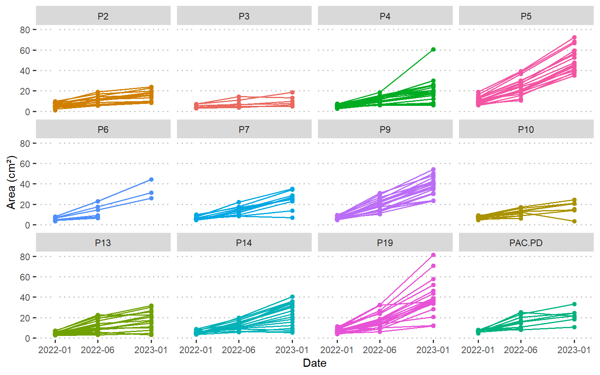
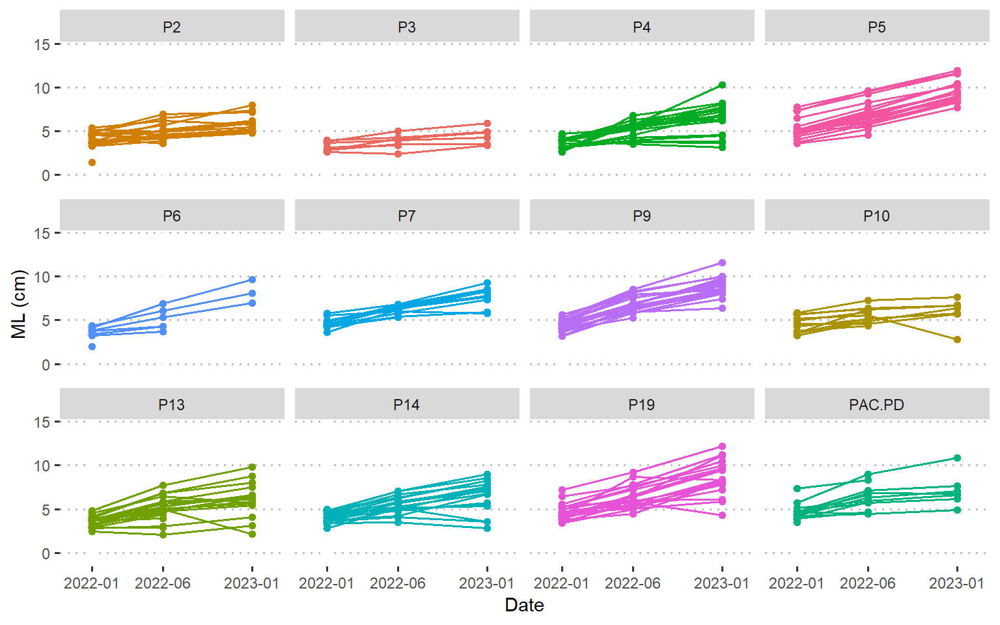

Crecimiento y Salud de Corales - Reef Revival
Primera evaluación del desempeño fisiológico de corales de viveros en Galápagos
Daniel Velasco
2026-08-13

Este R Markdown se centra en los análisis del estudio del primer estudio de factibilidad de siembra de coral en Galápagos. Este estudio se realizó en el primer vivero de coral (fase piloto) de Reef Revival, un proyecto de restauración coralina ubicado en Isabela, Galápagos. Los temas abordados incluyen las tasas de crecimiento, mortalidad y salud coralina.
Si quieres conocer más sobre Galápagos Reef Revival, nuestro trabajo de restauración de corales y los proyectos de investigación que desarrollamos en Galápagos, visita Galápagos Reef Revival.
Manuscrito Científico:
Dávalos, N., Velasco-Cedeño, D., & Brandt, M. (2026). First assessment of the physiological performance of nursery corals in the Galápagos Islands: seasonal impacts on Pocillopora (Scleractinia: Pocilloporidae) growth. Revista de Biología Tropical, 74(S1), e202610168. Coral restoration in Latin America and the Caribbean: papers presented at the Reef Futures 2024 congress, Quintana Roo, Mexico. https://doi.org/10.15517/0xznfj40.
Todos los gráficos y análisis estadísticos del proyecto piloto en este estudio se realizaron con el código de este R Markdown.

Crecimiento
Primeros Pasos
Cargar Paquetes
R es un lenguaje de programación y un entorno de trabajo diseñado
principalmente para el análisis estadístico, manejo de datos y
visualización. Su funcionalidad puede ampliarse mediante paquetes, que
son conjuntos de funciones desarrolladas para realizar tareas
específicas. Por ejemplo, readxl facilita la lectura de
archivos de Excel.
Importar Datos
Los datos almacenados en un archivo de Excel (.xlsx) pueden
importarse a R utilizando, por ejemplo, la función
read_excel() del paquete readxl. Al importar una tabla,
esta se almacena en R como un data frame, una estructura de datos
organizada en filas y columnas, similar a una hoja de cálculo: cada fila
normalmente representa una observación y cada columna una variable.
R también muestra el tipo de dato almacenado en cada columna. Por
ejemplo, <dbl> indica variables numéricas,
<date> fechas y <fct> factores o
variables categóricas. El valor NA representa un dato
ausente (No Available, Missing value).
Esta base de datos, que en R es utilizada con el nombre
corals, contiene las mediciones hechas en las fotografías
de los corales usando ImageJ.
## [1] "H:/Unidades compartidas/Coral Growth & Fitness/2022-23 Proyecto Piloto"# import master database
corals0 <- read_excel("Data/Processed/GRR Pilot Coral Growth.xlsx",
sheet = "MASTER")
#see
corals0## # A tibble: 2,040 × 13
## Group Measuring Date Year Month Day Phenotype Fragment
## <chr> <dbl> <dttm> <dbl> <dbl> <dbl> <chr> <dbl>
## 1 Control 2 2022-08-05 00:00:00 2022 8 5 P13 1
## 2 Control 2 2022-08-05 00:00:00 2022 8 5 P13 2
## 3 Control 2 2022-08-05 00:00:00 2022 8 5 P13 3
## 4 Control 2 2022-08-05 00:00:00 2022 8 5 P13 4
## 5 Control 2 2022-08-05 00:00:00 2022 8 5 P13 5
## 6 Control 2 2022-08-05 00:00:00 2022 8 5 P13 6
## 7 Control 2 2022-08-05 00:00:00 2022 8 5 P13 7
## 8 Control 2 2022-08-05 00:00:00 2022 8 5 P13 8
## 9 Control 2 2022-08-05 00:00:00 2022 8 5 P13 9
## 10 Control 2 2022-08-05 00:00:00 2022 8 5 P13 10
## # ℹ 2,030 more rows
## # ℹ 5 more variables: Plane <chr>, State <chr>, Area <dbl>, P <dbl>, ML <dbl>Este data frame, llamado corals0, contiene 720
observaciones y 13 variables correspondientes a las mediciones de los
corales de los grupos piloto y control o “testigos”. Cada fragmento fue
fotografiado desde dos planos, horizontal y vertical, por lo que para
cada combinación de fragmento y fecha de monitoreo existen dos filas,
una por fotografía, diferenciadas mediante la variable Plane. Las demás
columnas identifican el grupo experimental (Group), número
y fecha del monitoreo (Measuring, Date), año,
mes y día, morfotipo o fenotipo (Phenotype), identificador
del fragmento (Fragment) y estado (State),
mientras que Area, P y ML
corresponden al área, perímetro y largo máximo medidos a partir de cada
fotografía. La base de datos incluye varios morfotipos —denominados
Phenotype en el código— identificados durante el estudio de
línea base realizado por Nicolás Dávalos en la bahía de Puerto Villamil.
El grupo piloto fue establecido para evaluar la viabilidad de las
técnicas de siembra en vivero de corales Pocillopora en
Isabela, Galápagos.

Procesamiento de Datos
tidyverse es una colección de paquetes de R diseñados
para facilitar la manipulación, análisis y visualización de datos
utilizando una sintaxis consistente. Dentro de esta colección,
dplyr proporciona funciones para organizar, transformar,
resumir y filtrar bases de datos, mientras que ggplot2
permite construir visualizaciones mediante un sistema basado en capas. A
lo largo de este análisis, dplyr se utiliza principalmente para el
procesamiento y transformación de los datos, y ggplot2 para generar las
figuras y explorar visualmente los patrones en las variables
analizadas.
Las fotografías fueron tomadas en tres fechas: Enero de 2022, Junio de 2022 y Enero de 2023; para tener mediciones en el inicio y final de las épocas caliente y fría de 2022 (año con fenómeno de La Niña).
En el siguiente paso se crea el objeto corals a partir
de la base original corals0, seleccionando únicamente los
datos que se utilizarán en los análisis posteriores. Con
filter() se conservan solamente los corales del grupo
piloto (Group == "Pilot") y las mediciones realizadas en el
plano horizontal (Plane == "Horizontal"). Además, se
excluyen los corales de las cuerdas P5-2, P9-2 y P19-2 (grupos nombrados
por los morfotipos).
## P?4 P10 P13 P14 P19 P19-2 P2 P4 P5 P5-2 P6
## 120 120 200 120 120 120 120 200 120 120 120
## P7 P9 P9-2 PAC-PD
## 120 200 120 120#remove morphotypes, select pilot corals and convert vars to factors
corals <- corals0 %>%
filter(Group == "Pilot", Plane == "Horizontal",
!Phenotype %in% c("P5-2", "P9-2", "P19-2")) %>%
mutate(Date = as.Date(Date),
Phenotype = recode(Phenotype, `P?4` = "P3"),
Phenotype = recode(Phenotype, `PAC-PD` = "PAC.PD"),
Phenotype = factor(
Phenotype, levels = c("P2", "P3", "P4", "P5", "P6",
"P7", "P9", "P10", "P13", "P14",
"P19", "PAC.PD"))) %>%
mutate_if(is.character, factor) %>% arrange(Measuring)
#see data
print(corals, width = Inf)## # A tibble: 720 × 13
## Group Measuring Date Year Month Day Phenotype Fragment Plane
## <fct> <dbl> <date> <dbl> <dbl> <dbl> <fct> <dbl> <fct>
## 1 Pilot 1 2022-01-08 2022 1 8 P3 1 Horizontal
## 2 Pilot 1 2022-01-08 2022 1 8 P3 2 Horizontal
## 3 Pilot 1 2022-01-08 2022 1 8 P3 3 Horizontal
## 4 Pilot 1 2022-01-08 2022 1 8 P3 4 Horizontal
## 5 Pilot 1 2022-01-08 2022 1 8 P3 5 Horizontal
## 6 Pilot 1 2022-01-08 2022 1 8 P3 6 Horizontal
## 7 Pilot 1 2022-01-08 2022 1 8 P3 7 Horizontal
## 8 Pilot 1 2022-01-08 2022 1 8 P3 8 Horizontal
## 9 Pilot 1 2022-01-08 2022 1 8 P3 9 Horizontal
## 10 Pilot 1 2022-01-08 2022 1 8 P3 10 Horizontal
## State Area P ML
## <fct> <dbl> <dbl> <dbl>
## 1 <NA> 7.10 11.5 3.97
## 2 <NA> 5.55 12.0 3.66
## 3 <NA> 3.85 10.2 2.83
## 4 <NA> 7.23 13.4 3.82
## 5 <NA> 3.31 8.60 2.64
## 6 <NA> 4.13 9.58 2.87
## 7 <NA> 2.99 10.7 3.16
## 8 Empty NA NA NA
## 9 Empty NA NA NA
## 10 Empty NA NA NA
## # ℹ 710 more rows## Group Measuring Date Year Month
## Pilot:720 Min. :1 Min. :2022-01-08 Min. :2022 Min. :1.000
## 1st Qu.:1 1st Qu.:2022-01-08 1st Qu.:2022 1st Qu.:1.000
## Median :2 Median :2022-06-20 Median :2022 Median :1.000
## Mean :2 Mean :2022-07-04 Mean :2022 Mean :2.667
## 3rd Qu.:3 3rd Qu.:2023-01-12 3rd Qu.:2023 3rd Qu.:6.000
## Max. :3 Max. :2023-01-12 Max. :2023 Max. :6.000
##
## Day Phenotype Fragment Plane
## Min. : 8.00 P2 : 60 Min. : 1.00 Horizontal:720
## 1st Qu.: 8.00 P3 : 60 1st Qu.: 5.75
## Median :12.00 P4 : 60 Median :10.50
## Mean :13.33 P5 : 60 Mean :10.50
## 3rd Qu.:20.00 P6 : 60 3rd Qu.:15.25
## Max. :20.00 P7 : 60 Max. :20.00
## (Other):360
## State Area P ML
## Dead : 10 Min. : 1.022 Min. : 4.363 Min. : 1.408
## Empty :147 1st Qu.: 6.332 1st Qu.:13.931 1st Qu.: 4.213
## Lost : 41 Median :10.551 Median :19.281 Median : 5.283
## No picture: 1 Mean :15.396 Mean :22.114 Mean : 5.682
## NA's :521 3rd Qu.:20.103 3rd Qu.:27.128 3rd Qu.: 6.838
## Max. :81.367 Max. :84.442 Max. :12.196
## NA's :189 NA's :189 NA's :189## P2 P3 P4 P5 P6 P7 P9 P10 P13 P14 P19
## 60 60 60 60 60 60 60 60 60 60 60
## PAC.PD
## 60Estas funciones se utilizan para inspeccionar los datos y comprobar
su estructura y contenido antes de continuar con los análisis.
print() permite visualizar el objeto, mientras que
summary() genera un resumen descriptivo de las variables o
de una variable específica. print(corals, width = Inf)
muestra el data frame completo en cuanto a sus columnas, evitando que
algunas se oculten por falta de espacio.
Visualizar Mediciones
Durante el procesamiento de las imágenes en ImageJ, tres métodos se utilizaron para cuantificar el tamaño de cada coral: medir el largo máximo (maximum length o ML), el perímetro y el área. Estas mediciones se hacen mediante al trazar manualmente el borde de la figura del coral en cada imagen. Para calcular las tasas de crecimiento se usarán los valores de área porque esta variable es más informativa, y de ML, para facilitar la comparación con otros estudios que miden el tamaño de los corales en una sola dimensión.

ggplot2 se utiliza para visualizar los cambios en área y
largo máximo (ML) de cada fragmento (tamaños en eje y) a través del
tiempo (eje x). Los puntos representan las mediciones realizadas en cada
fecha y las líneas conectan las observaciones correspondientes a un
mismo fragmento. Los gráficos se separan por fenotipo para facilitar la
comparación visual de los patrones de crecimiento entre grupos. En este
caso, la pendiente o slope de las líneas se puede interpretar
como una tasa de crecimiento coralino.
Antes de graficar, se genera una paleta de colores, asignando un color para cada morfotipo (“Phenotype” en código) de aquí en adelante.
En ggplot2, un gráfico se construye progresivamente mediante capas
conectadas con el símbolo +.
Primero se especifica la base de datos (corals) y,
dentro de aes(), las variables que se representarán: Date
en el eje x, Area en el eje y, Fragment para identificar las mediciones
de cada coral y Phenotype para asignar colores. Luego,
geom_point() añade los puntos y geom_line()
conecta las observaciones de cada fragmento.
facet_wrap(~Phenotype) divide la figura en un panel para
cada fenotipo. Finalmente, las funciones labs(),
scale_*() y theme() permiten modificar las
etiquetas, escalas, colores y apariencia general del gráfico.
# Area
corals %>%
ggplot(aes(x = Date, y = Area, group = Fragment, color = Phenotype)) +
geom_point() + geom_line() + facet_wrap(~Phenotype) +
labs(y = "Area (cm²)") +
scale_y_continuous(expand = c(0,3)) +
scale_x_date(breaks = as.Date(c("2022-01-08", "2022-06-20", "2023-01-12")),
date_labels = "%Y-%m", expand = c(0.2,0)) +
scale_color_manual(values = color_palette) + theme_pubclean() +
theme(legend.position = "none", plot.title = element_text(hjust = 0.5),
text = element_text(family = "sans", size = 11))
#export graph
#ggsave("Results/c_size_A_h.png", width = 8, height = 5, dpi = 500)
# ML
corals %>%
ggplot(aes(x = Date, y = ML, group = Fragment, color = Phenotype)) +
geom_point() + geom_line() + facet_wrap(~Phenotype) +
labs(y = "ML (cm)") +
scale_y_continuous(expand = c(0,3)) +
scale_x_date(breaks = as.Date(c("2022-01-08", "2022-06-20", "2023-01-12")),
date_labels = "%Y-%m", expand = c(0.2,0)) +
scale_color_manual(values = color_palette) + theme_pubclean() +
theme(legend.position = "none", plot.title = element_text(hjust = 0.5),
text = element_text(family = "sans", size = 11))
Esta es una forma muy visual de observar tendencias en el crecimiento, pero puedes terminar así:

Por eso, hay que calcular indicadores matemáticos que permitan cuantificar el crecimiento y evaluar estadístícamente tendencias entre temporadas y/o morfotipos. En este caso, usaremos tasas de crecimiento.
Tasas de Crecimiento
Cálculo
Wide Format
Para calcular las tasas de crecimiento, hay que reorganizar los datos
en el data frame. La función pivot_wider() en R
(del paquete tidyr) convierte datos de formato largo a
formato ancho. Toma una columna con valores categóricos y transforma sus
valores únicos en columnas, reorganizando los datos para que sean más
fáciles de analizar o visualizar en ciertos contextos. En nuestro caso,
utiliza la columna Measuring para dividir las fechas y
mediciones en tres columnas (porque son tres fechas de medición).
Fórmulas
En este código, se están calculando las tasas de crecimiento mediante tres métodos:
- Absolute Growth Rate (AGR): se usa la formula
AGR = (A2 - A1) / t. - Relative Growth Rate (RGR): se usa la formula
AGR = (A2 - A1) / (t x A1). - Specific Growth Rate (SGR): se usa la formula
AGR = (ln(A2) - ln(A1)) / t.
#get growth rates: AGR, RGR and SGR
growth0 <- corals_wide %>% mutate(
dA_Warm = Area2 - Area1, dA_Cold = Area3 - Area2,
dML_Warm = ML2 - ML1, dML_Cold = ML3 - ML2,
AGR.A_Warm = (Area2 - Area1) / as.numeric(Date2 - Date1), #cm²/day
AGR.A_Cold = (Area3 - Area2) / as.numeric(Date3 - Date2),
AGR.ML_Warm = (ML2 - ML1) / as.numeric(Date2 - Date1), #cm /day
AGR.ML_Cold = (ML3 - ML2) / as.numeric(Date3 - Date2),
RGR.A_Warm = AGR.A_Warm /Area1, #% /day
RGR.A_Cold = AGR.A_Cold /Area2,
RGR.ML_Warm = AGR.ML_Warm/ML1 ,
RGR.ML_Cold = AGR.ML_Cold/ML2,
SGR.A_Warm = (log(Area2) - log(Area1)) / as.numeric(Date2 - Date1),
SGR.A_Cold = (log(Area3) - log(Area2)) / as.numeric(Date3 - Date2),
SGR.ML_Warm = (log(ML2) - log(ML1 )) / as.numeric(Date2 - Date1),
SGR.ML_Cold = (log(ML3) - log(ML2 )) / as.numeric(Date3 - Date2)) %>%
mutate(across(starts_with("AGR") | #cm²/ YEAR
starts_with("RGR") | # % /year
starts_with("SGR"), ~ . * 365))
#export
#write_xlsx(growth0, path = "Results/GRR Pilot Coral Growth Rates.xlsx")Puede parecer un dolor de cabeza, pero con el tiempo es mejor hacer estos cálculos con código, porque usar fórmulas en Excel no es replicable. ¿Qué sucede si se quiere repetir el análisis con un nuevo año de datos? Es mejor tener el mismo código como plantilla que volver a editar una hoja de cálculo y manualmente calcular las tasas de crecimiento.
R permite trabajar con fórmulas y de forma automatizada con código. Las matemáticas pueden ser intimidantes, pero si se le dedica el tiempo, son fáciles de dominar. Y son igual de importantes en la física, en ingenierías, y también en la ecología.
Long Format
La función pivot_longer() en R (del paquete
tidyr) convierte datos de formato ancho a formato largo. Es
útil para reorganizar los datos en un formato más compacto y analizable,
donde las columnas se transforman en pares clave-valor. Aquí, las
columnas independientes para las épocas caliente y fría se reorganizan
en una sola columna por variable y se crea una columna con el factor
Season que indica la temporada del año, que puede ser
Warm o Cold.
Posteriormente, la base de datos será dividida en dos, una con los datos de las fotografías tomadas en ángulo horizontal, y otra con los datos de aquellas en vertical.
#restructure in long format
growth <- growth0[,-c(5:20)] %>%
pivot_longer(
cols = starts_with("AGR.A_") | starts_with("AGR.ML_") |
starts_with("RGR.A_") | starts_with("RGR.ML_") |
starts_with("SGR.A_") | starts_with("SGR.ML_"),
names_to = c(".value", "Season"), names_sep = "_") %>%
mutate(Season = factor(Season, levels = c("Warm", "Cold")))
#check the reorganized data
print(head(growth))## # A tibble: 6 × 11
## Group Phenotype Fragment Plane Season AGR.A AGR.ML RGR.A RGR.ML SGR.A SGR.ML
## <fct> <fct> <dbl> <fct> <fct> <dbl> <dbl> <dbl> <dbl> <dbl> <dbl>
## 1 Pilot P3 1 Hori… Warm 16.2 0.683 2.28 0.172 1.57 0.166
## 2 Pilot P3 1 Hori… Cold -2.00 1.15 -0.140 0.269 -0.146 0.250
## 3 Pilot P3 2 Hori… Warm 2.24 0.638 0.404 0.174 0.371 0.168
## 4 Pilot P3 2 Hori… Cold 1.51 0.537 0.231 0.136 0.217 0.131
## 5 Pilot P3 3 Hori… Warm 5.31 2.91 1.38 1.03 1.07 0.845
## 6 Pilot P3 3 Hori… Cold 6.09 1.30 0.978 0.315 0.779 0.290¿Datos Paramétricos?
Siempre hay que evaluar si los datos cumplen con los principios de normalidad y homocedasticidad (homogeneidad de las varianzas). Además, es necesario identificar outliers (datos anormales) y verificar que no hayan extreme values que puedan alterar los resultados de las pruebas estadísticas. Con todo el data management hecho y esto revisado, sabemos que nuestros datos son “limpios” y podemos escoger el test estadístico adecuado que nos indique si nuestra hipótesis nula se mantiene o rechaza.
En estas secciones de análisis de outliers, normalidad y homocedasticidad, se usarán los datos solo de las fotografías horizontales.
Outliers
Los outliers son observaciones que se desvían considerablemente del resto de los datos. Pueden ser mucho mayores o mucho menores que el resto de los valores en un conjunto de datos.
growth %>% group_by(Season) %>%
select(Season, `AGR.A`, Phenotype) %>%
identify_outliers(`AGR.A`) %>% filter(is.extreme == T)## # A tibble: 0 × 5
## # ℹ 5 variables: Season <fct>, AGR.A <dbl>, Phenotype <fct>, is.outlier <lgl>,
## # is.extreme <lgl>Normalidad
En estadística, una distribución normal, distribución gaussiana o
normalidad estadística es un tipo de distribución de probabilidad
continua para una variable aleatoria de valor real. Se considera que un
set de datos tiene normalidad si la media representa el centro de la
distribución (media = mediana), el tamaño de la muestra es
lo suficientemente grande n = 30 y la gráfica de su función
de densidad tiene una forma acampanada y simétrica.
Hay varios métodos para saber si nuestros datos cumplen con el requisito de normalidad (pruebas de normalidad, Q-Q plots, histogramas, etc).
Shapiro–Wilk test
El test de Shapiro-Wilk es una prueba estadística utilizada para determinar si un conjunto de datos sigue una distribución normal. El test compara la distribución de los datos observados con un modelo de distribución normal. Como resultado puede ocurrir lo siguiente:
- Hipótesis Nula (H0): La hipótesis nula del test es que los datos siguen una distribución normal.
- Hipótesis Alternativa (H1): La hipótesis alternativa es que los datos no siguen una distribución normal. Si el valor p es menor que un nivel de significancia predefinido (por ejemplo, 0.05), se rechaza la hipótesis nula, indicando que los datos probablemente no siguen una distribución normal.
Sin embargo, el test de Shapiro-Wilk se vuelve muy sensible a
pequeñas desviaciones de la normalidad cuando el tamaño de muestra es
grande. Esto significa que incluso las pequeñas desviaciones de la
normalidad pueden ser detectadas como significativas.Si
n > 50, aumentando la probabilidad de cometer falso
positivos (error tipo I).
Si nuestros datos son muy grandes, el test de Shapiro–Wilk no es la mejor opción. Sin embargo, el test puede ser muy útil cuando tus datos presentan “estratificación” (datos divididos en grupos). En nuestro caso, las mediciones de corales se agrupan en dos temporadas y en morfotipos.
Al estratificar por morfotipos, como resultado, los valores de crecimiento de todos los morfotipos en ambas temporadas muestran una distribución normal. Solo P4 en la época fría no tiene valores normales. Pero se puede considerar que los estratos del set de datos en general sigue un modelo de distribución normal.
Q-Q plot
Un gráfico Q-Q (quantile–quantile plot) es un gráfico de probabilidad para comparar dos distribuciones de probabilidad al representar gráficamente sus cuantiles entre sí. Permite evaluar visualmente si un conjunto de datos sigue una distribución normal. Este tipo de gráficos tienen dos dimensiones compuestas por los fitted values y los residuales.
- Los theoretical quantiles son los cuantiles de la distribución teórica (en este caso, normal) calculados a partir de los datos ajustados. Los fitted values (valores ajustados) son las predicciones del modelo para las observaciones en tu conjunto de datos. En cambio, los residuals son las diferencias entre los valores observados reales y los valores ajustados por el modelo. En otras palabras, representan la cantidad de variación en los datos que no es explicada por el modelo.
Interpretación
Ajuste Ideal: La linealidad de los puntos sugiere que los datos se distribuyen normalmente. Si las dos distribuciones que se comparan son similares, los puntos del gráfico Q-Q se ubicarán aproximadamente en la línea de identidad y = x.
Desviaciones en los Extremos: Si los puntos se desvían de la línea diagonal en los extremos (colas), esto indica que los datos tienen colas más pesadas o más ligeras que la distribución normal. Puede señalar que el modelo no está capturando adecuadamente la variabilidad en las colas de la distribución.
Curvatura: Si los puntos se desvían sistemáticamente de la línea diagonal en forma de curva (por ejemplo, en forma de “S”), esto sugiere que los datos tienen una distribución diferente de la normal, como una distribución sesgada.
#models
normal1 <- lm(AGR.A ~ Season, growth) # create models
normal2 <- lm(AGR.ML ~ Season, growth)
normal3 <- lm(RGR.A ~ Season, growth)
normal4 <- lm(RGR.ML ~ Season, growth)
normal5 <- lm(SGR.A ~ Season, growth)
normal6 <- lm(SGR.ML ~ Season, growth)
# Shapiro–Wilk test. Do not use if n > 50 (too sensitive to type II error)
#run test
shapiro_test(residuals(normal1)) # not normal## # A tibble: 1 × 3
## variable statistic p.value
## <chr> <dbl> <dbl>
## 1 residuals(normal1) 0.962 0.0000000883## # A tibble: 2 × 4
## Season variable statistic p
## <fct> <chr> <dbl> <dbl>
## 1 Warm AGR.A 0.952 0.00000599
## 2 Cold AGR.A 0.952 0.0000442## # A tibble: 24 × 5
## Phenotype Season variable statistic p
## <fct> <fct> <chr> <dbl> <dbl>
## 1 P2 Warm AGR.A 0.961 0.613
## 2 P3 Warm AGR.A 0.919 0.464
## 3 P4 Warm AGR.A 0.962 0.608
## 4 P5 Warm AGR.A 0.978 0.902
## 5 P6 Warm AGR.A 0.917 0.482
## 6 P7 Warm AGR.A 0.964 0.833
## 7 P9 Warm AGR.A 0.963 0.596
## 8 P10 Warm AGR.A 0.972 0.932
## 9 P13 Warm AGR.A 0.929 0.145
## 10 P14 Warm AGR.A 0.972 0.801
## # ℹ 14 more rows## 1 2 3 4 5 6
## 17.84602 22.00998 17.84602 22.00998 17.84602 22.00998## 1 2 3 4 5 6
## -1.689729 -24.013938 -15.602275 -20.496826 -12.538962 -15.921924# Q-Q plots
#qqplots per variable
ggqqplot(residuals(normal1)) + theme_pubclean() + ggtitle("AGR.A") +
ggqqplot(residuals(normal3)) + theme_pubclean() + ggtitle("RGR.A") +
ggqqplot(residuals(normal5)) + theme_pubclean() + ggtitle("SGR.A") +
ggqqplot(residuals(normal2)) + theme_pubclean() + ggtitle("AGR.ML") +
ggqqplot(residuals(normal4)) + theme_pubclean() + ggtitle("RGR.ML") +
ggqqplot(residuals(normal6)) + theme_pubclean() + ggtitle("SGR.ML")
#by seasons and morphotypes
growth %>% filter(Season == "Warm") %>%
ggqqplot("AGR.A", facet.by = "Phenotype") +
ggtitle("AGR.A, Warm Season") + theme_pubclean() #warm season## Warning: Removed 54 rows containing non-finite outside the scale range
## (`stat_qq()`).## Warning: Removed 54 rows containing non-finite outside the scale range
## (`stat_qq_line()`).
## Removed 54 rows containing non-finite outside the scale range
## (`stat_qq_line()`).
growth %>% filter(Season == "Cold") %>%
ggqqplot("AGR.A", facet.by = "Phenotype") +
ggtitle("AGR.A, Cold Season") + theme_pubclean() #cold season## Warning: Removed 87 rows containing non-finite outside the scale range
## (`stat_qq()`).## Warning: Removed 87 rows containing non-finite outside the scale range
## (`stat_qq_line()`).
## Removed 87 rows containing non-finite outside the scale range
## (`stat_qq_line()`).
Homocedasticidad
La homocedasticidad es la condición en la que la varianza de los residuos (errores) es constante a lo largo de todos los niveles de las variables independientes. En otras palabras, los residuos deben tener una varianza constante sin importar el valor de la variable predictora.
Bartlett’s Test Evalúa si las varianzas de los grupos son homogéneas. Es sensible a las desviaciones de normalidad, lo que significa que puede dar resultados erróneos si los datos no son normales.
Levene’s Test También evalúa si las varianzas de los grupos son homogéneas. Es más robusto que Bartlett’s Test cuando los datos no siguen una distribución normal.
Hipótesis: - H0: Las varianzas de todos los grupos son iguales. - H1: Al menos un grupo tiene una varianza diferente.
Ambas pruebas son útiles para determinar si es adecuado usar métodos
paramétricos que asumen igualdad de varianzas (como el t-test con
var.equal = TRUE).

## Bartlett's test (more sensitive to deviations from normality)
bartlett.test(AGR.A ~ Season, growth)##
## Bartlett test of homogeneity of variances
##
## data: AGR.A by Season
## Bartlett's K-squared = 27.366, df = 1, p-value = 1.684e-07## # A tibble: 1 × 4
## df1 df2 statistic p
## <int> <int> <dbl> <dbl>
## 1 1 337 26.4 0.000000471Pruebas Estadísticas
En este estudio, cada pendiente o slope representa la tasa de crecimiento de un coral en función del tiempo (eje x). Así, comparamos las pendientes entre la época caliente y la época fría para evaluar si los corales crecieron más rápido en una temporada que en la otra.
En términos biológicos, esto puede revelar cómo las condiciones estacionales (temperatura, nutrientes, etc.) afectan el crecimiento coralino. Para comparar las tasas de crecimiento entre temporadas, usamos pruebas t pareadas y calculamos el tamaño del efecto (Cohen’s d).
Entre Temporadas
t tests y Cohen’s d
Un t-test es una prueba estadística utilizada para evaluar si existe una diferencia significativa entre las medias de dos grupos. El resultado incluye un valor p, que indica qué tan compatibles son los datos observados con la hipótesis de que no existe una diferencia entre las medias.
El Cohen’s d es una medida del tamaño del efecto (effect size). A diferencia del t-test, no evalúa si la diferencia es estadísticamente significativa, sino qué tan grande es la diferencia entre los grupos en relación con su variabilidad. Como referencia general, valores de d cercanos a 0.2, 0.5 y 0.8 suelen interpretarse como efectos pequeños, moderados y grandes, respectivamente.
Funciones en R
Una función en R es un bloque de código diseñado para realizar una
tarea específica y que puede reutilizarse varias veces. Una función
puede recibir uno o varios valores como argumentos, procesarlos y
devolver un resultado. Esto permite automatizar tareas repetitivas,
evitando tener que escribir el mismo código para cada observación,
variable o análisis. Las funciones personalizadas se crean utilizando
function().
En este caso, hice la función p_to_signif() para
convertir automáticamente un valor p en un símbolo de significancia
estadística. La función recibe un valor p y utiliza una serie de
condiciones if y else para asignarle “****”,
“***”, “**”, “*” o
ns según su magnitud. Por ejemplo,
p_to_signif(0.003) devuelve “**”, mientras que
un valor p ≥ 0.05 devuelve ns (not
significant).
#function to convert p-values to significance symbols
p_to_signif <- function(p) {
if (p < 0.0001) {
return("****")
} else if (p < 0.001) {
return("***")
} else if (p < 0.01) {
return("**")
} else if (p < 0.05) {
return("*")
} else {
return("ns") # No significativo
} }El siguiente bloque automatiza la comparación de las tasas de
crecimiento entre temporadas para seis variables de crecimiento
(AGR.A, AGR.ML, RGR.A,
RGR.ML, SGR.A y SGR.ML). Primero,
los nombres de estas variables se almacenan en el vector
GRs. Luego, lapply() ejecuta el mismo
procedimiento para cada variable: realiza un t-test pareado entre
temporadas, calcula el Cohen’s d como medida del tamaño del efecto y
utiliza la función p_to_signif() para convertir los valores
p en símbolos de significancia.
Los resultados de cada análisis se combinan mediante
bind_rows() en el data frame res_GRs_t.
Posteriormente, split() vuelve a separar los resultados por
variable y list2env() crea un objeto independiente para
cada una. De esta manera, el mismo análisis estadístico se aplica
automáticamente a todas las métricas de crecimiento, evitando repetir
manualmente el código seis veces.
# Slope tests (t-tests)
#set varriables
GRs <- c("AGR.A", "AGR.ML", "RGR.A", "RGR.ML", "SGR.A", "SGR.ML")
#execute t-tests and Cohen's d
res_GRs_t <- bind_rows(lapply(GRs, function(var) {
#t-test
t_test_res <- growth %>%
t_test(as.formula(paste(var, "~ Season")),
paired = TRUE, var.equal = FALSE) %>%
add_xy_position(x = "Season") %>%
mutate(p.signif = sapply(p, p_to_signif))
#Cohen's d
cohens_d_res <- growth %>%
cohens_d(as.formula(paste(var, "~ Season")),
var.equal = FALSE) %>%
select(-c(n1, n2, .y.))
#join results in df
combined_res <- t_test_res %>%
left_join(cohens_d_res, by = c("group1", "group2")) %>%
mutate(Variable = var)
return(combined_res) }))
#make list
res_GRs_t_list <- split(res_GRs_t, res_GRs_t$Variable) %>%
lapply(function(df) df %>% rename(effectsize = effsize))
#name objects
names(res_GRs_t_list) <- paste0("res.GR.t.", names(res_GRs_t_list))
#extract results
list2env(res_GRs_t_list, envir = .GlobalEnv)## <environment: R_GlobalEnv>Por Morfotipo
Estas funciones automatizan la comparación entre temporadas para cada
morfotipo por separado. run_t_test_morph() agrupa los datos
por morfotipo/fenotipo y aplica un t-test pareado entre las temporadas
para cada variable de crecimiento. Además, convierte los valores p en
símbolos de significancia y añade el nombre de la variable analizada. De
forma paralela, run_d_test_morph() calcula el Cohen’s d
para cuantificar el tamaño del efecto de la diferencia entre temporadas
dentro de cada morfotipo.
Posteriormente, ambas funciones se ejecutan sobre todas las tasas de crecimiento (GRs). Los resultados de los t-tests y de Cohen’s d se combinan en un solo data frame y luego se separan por variable para generar objetos independientes con los resultados de cada métrica.
# function for t tests
run_t_test_morph <- function(var) {
growth %>%
group_by(Phenotype) %>%
t_test(as.formula(paste(var, "~ Season")),
paired = TRUE, var.equal = FALSE) %>%
add_xy_position(x = "Season") %>%
mutate(p.signif = sapply(p, p_to_signif), Variable = var)}
#Cohen's d by phenotype
run_d_test_morph <- function(var) {
growth %>%
group_by(Phenotype) %>%
cohens_d(as.formula(paste(var, "~ Season")),
var.equal = FALSE) %>%
mutate(Variable = var) %>% select(-c(n1, n2, .y.)) }
#execute with all GRs
res_t_morph <- bind_rows(lapply(GRs, run_t_test_morph))
res_d_morph <- bind_rows(lapply(GRs, run_d_test_morph))
#join in df
res_GRs_morph_t <- res_t_morph %>%
left_join(res_d_morph, by = c("Phenotype", "group1",
"group2", "Variable"))
#list
res_GRs_morph_t_list <- split(res_GRs_morph_t, res_GRs_morph_t$Variable)
#name objects
names(res_GRs_morph_t_list) <- paste0("res.GR.morph.t.",
names(res_GRs_morph_t_list))
#to the env
list2env(res_GRs_morph_t_list, envir = .GlobalEnv)## <environment: R_GlobalEnv>Entre Morfotipos
Un ANOVA (Analysis of Variance) es una prueba estadística utilizada para evaluar si existen diferencias significativas entre las medias de tres o más grupos. El ANOVA indica si existe una diferencia global entre los grupos, pero no identifica directamente cuáles grupos difieren entre sí; para ello se utilizan pruebas post hoc.
El Welch ANOVA es una variante del ANOVA que no requiere asumir que todos los grupos tienen la misma varianza y es más robusta cuando los tamaños de muestra son diferentes. En este análisis se utiliza para evaluar si las tasas de crecimiento difieren entre los distintos morfotipos de coral.

Para cada tasa de crecimiento se ejecuta un Welch ANOVA de manera independiente para cada temporada. Este análisis permite evaluar si existen diferencias en la media de crecimiento entre los distintos morfotipos y es apropiado cuando no se asume igualdad de varianzas entre grupos.
Cuando el Welch ANOVA detecta diferencias entre morfotipos, se utiliza la prueba Games–Howell como análisis post hoc. En un ANOVA normal se usa un Tukey HSD (Honestly Significant Difference). Esta prueba realiza comparaciones por pares entre morfotipos y permite identificar específicamente cuáles difieren entre sí, sin requerir igualdad de varianzas ni tamaños de muestra iguales. Al igual que en los análisis anteriores, las funciones se aplican automáticamente a todas las variables de GRs.
#rename PAC-PD -> PAC.PD
growth <- growth %>% mutate(Phenotype = recode(Phenotype,
`PAC-PD` = "PAC.PD"))
#variables
GRs## [1] "AGR.A" "AGR.ML" "RGR.A" "RGR.ML" "SGR.A" "SGR.ML"#Welch ANOVAs
run_anova <- function(var) {
growth %>% group_by(Season) %>%
welch_anova_test(as.formula(paste(var, "~ Phenotype"))) %>%
mutate(p.signif = sapply(p, p_to_signif), Variable = var) }
#Games-Howell post hoc
run_games_howell <- function(var) {
growth %>% group_by(Season) %>%
games_howell_test(as.formula(paste(var, "~ Phenotype"))) %>%
mutate(Variable = var) }
#execute tests and save as dfs
res_GRs_aov <- bind_rows(lapply(GRs, run_anova))
res_GRs_pwc <- bind_rows(lapply(GRs, run_games_howell))
#to lists
res_GRs_aov_list <- split(res_GRs_aov, res_GRs_aov$Variable)
res_GRs_pwc_list <- split(res_GRs_pwc, res_GRs_pwc$Variable)
#name objects
names(res_GRs_aov_list) <- paste0("res.GRs.aov.", names(res_GRs_aov_list))
names(res_GRs_pwc_list) <- paste0("res.GRs.pwc.", names(res_GRs_pwc_list))
#extract to env
list2env(res_GRs_aov_list, envir = .GlobalEnv)## <environment: R_GlobalEnv>## <environment: R_GlobalEnv>Letras de significancia y orden de los morfotipos
La función get_letters() transforma los resultados del
análisis post hoc de Games–Howell en letras de grupos estadísticos, que
posteriormente se mostrarán sobre los boxplots de crecimiento por
morfotipo. Los morfotipos que comparten una misma letra no presentan
diferencias estadísticamente significativas, mientras que aquellos con
letras distintas sí difieren. Este procedimiento se realiza por separado
para las temporadas cálida y fría. La función también calcula la
posición vertical donde se colocará cada letra sobre los boxplots.
Finalmente, get_morpho_order() calcula la media de cada
variable de crecimiento para cada morfotipo y utiliza estas medias para
definir el orden en que aparecerán los morfotipos en los boxplots. Los
ciclos for automatizan ambos procedimientos para todas las métricas de
crecimiento.
## [1] "AGR.A" "AGR.ML" "RGR.A" "RGR.ML" "SGR.A" "SGR.ML"get_letters <- function(posthoc_results, growth_data, variable) {
# Warm Season
warm <- posthoc_results %>% filter(Season == "Warm") %>%
select(group1, group2, p.adj)
comparisons_warm <- with(warm, setNames(p.adj,
paste(group1, group2, sep = "-")))
letters_warm <- multcompLetters(comparisons_warm)$Letters
# Cold Season
cold <- posthoc_results %>% filter(Season == "Cold") %>%
select(group1, group2, p.adj)
comparisons_cold <- with(cold, setNames(p.adj,
paste(group1, group2, sep = "-")))
letters_cold <- multcompLetters(comparisons_cold)$Letters
# Crear dataframes
letters_warm_df <- data.frame(Phenotype = names(letters_warm),
Season = "Warm",
Letters = letters_warm)
letters_cold_df <- data.frame(Phenotype = names(letters_cold),
Season = "Cold",
Letters = letters_cold)
# Combinar dataframes
letters_df <- rbind(letters_warm_df, letters_cold_df)
# Obtener posiciones
positions <- growth_data %>%
group_by(Phenotype, Season) %>%
summarise(max_value = max(.data[[variable]], na.rm = TRUE), .groups = "drop")
# Combinar con letras
letters_positions <- letters_df %>%
left_join(positions, by = c("Phenotype", "Season")) %>%
mutate(Season = factor(Season, levels = c("Warm", "Cold")))
return(letters_positions) }
# Función para ordenar los morfotipos por media
get_morpho_order <- function(growth_data, variable) {
morpho_list <- growth_data %>%
group_by(Phenotype) %>%
summarise(Mean = mean(.data[[variable]], na.rm = TRUE), .groups = "drop") %>%
arrange(Mean)
# Actualizar niveles del factor
growth_data <- growth_data %>%
mutate(Phenotype = factor(Phenotype, levels = morpho_list$Phenotype))
return(growth_data) }
# Aplicar las funciones a cada variable
letters_results <- list()
growth_ordered <- growth
for (gr in GRs) {
# Obtener letras posthoc
posthoc_results <- get(paste0("res.GRs.pwc.", gr)) # Extrae el objeto correspondiente
letters_results[[gr]] <- get_letters(posthoc_results, growth, gr)
# Ordenar morfotipos
growth_ordered <- get_morpho_order(growth_ordered, gr) }
growth_ordered_list <- list()
for (gr in GRs) {
growth_ordered_list[[gr]] <- get_morpho_order(growth_ordered, gr) }
#acceder a resultados
letters_results[["AGR.A"]]## Phenotype Season Letters max_value
## 1 P2 Warm ab 23.35328
## 2 P3 Warm a 16.15629
## 3 P4 Warm ab 28.40058
## 4 P5 Warm c 51.31049
## 5 P6 Warm abc 33.42997
## 6 P7 Warm ab 32.44469
## 7 P9 Warm c 50.18190
## 8 P10 Warm ab 19.96752
## 9 P13 Warm ab 35.46770
## 10 P14 Warm ab 30.16736
## 11 P19 Warm bc 51.74267
## 12 PAC.PD Warm abc 41.78914
## 13 P2 Cold ab 14.19779
## 14 P3 Cold a 13.79027
## 15 P4 Cold abc 74.24029
## 16 P5 Cold d 58.53289
## 17 P6 Cold abcde 37.58437
## 18 P7 Cold ce 30.25956
## 19 P9 Cold e 45.07396
## 20 P10 Cold abc 13.06204
## 21 P13 Cold abc 19.63027
## 22 P14 Cold bce 39.82930
## 23 P19 Cold de 86.48197
## 24 PAC.PD Cold abc 17.86197## Phenotype Season Letters max_value
## 1 P2 Warm ab 5.710940
## 2 P3 Warm ab 3.300796
## 3 P4 Warm abc 9.410399
## 4 P5 Warm a 4.152021
## 5 P6 Warm abc 4.157956
## 6 P7 Warm abc 5.261243
## 7 P9 Warm c 7.412803
## 8 P10 Warm b 2.391033
## 9 P13 Warm ac 8.089260
## 10 P14 Warm abc 4.763985
## 11 P19 Warm ac 5.619317
## 12 PAC.PD Warm abc 6.497068
## 13 P2 Cold a 1.107039
## 14 P3 Cold abc 1.314223
## 15 P4 Cold abcd 3.983489
## 16 P5 Cold bd 2.614884
## 17 P6 Cold bcd 1.636308
## 18 P7 Cold abcd 2.404385
## 19 P9 Cold bd 2.591154
## 20 P10 Cold abc 1.054040
## 21 P13 Cold a 1.692477
## 22 P14 Cold abcd 3.023555
## 23 P19 Cold d 4.257092
## 24 PAC.PD Cold ac 1.292815## Phenotype Season Letters max_value
## 1 P2 Warm ab 2.8372601
## 2 P3 Warm ab 2.0284555
## 3 P4 Warm abc 3.6928372
## 4 P5 Warm a 2.3485135
## 5 P6 Warm abc 2.3505919
## 6 P7 Warm abc 2.7068745
## 7 P9 Warm c 3.2716201
## 8 P10 Warm b 1.6267665
## 9 P13 Warm abc 3.4233020
## 10 P14 Warm abc 2.5532690
## 11 P19 Warm ac 2.8113036
## 12 PAC.PD Warm abc 3.0484066
## 13 P2 Cold a 0.8600203
## 14 P3 Cold abc 0.9831547
## 15 P4 Cold abc 2.0874206
## 16 P5 Cold b 1.6062881
## 17 P6 Cold bc 1.1590510
## 18 P7 Cold abc 1.5191577
## 19 P9 Cold bc 1.5966772
## 20 P10 Cold abc 0.8270977
## 21 P13 Cold ac 1.1880139
## 22 P14 Cold abc 1.7641123
## 23 P19 Cold b 2.1697115
## 24 PAC.PD Cold ac 0.9708209NOTA: Los análisis mediante t-tests, Welch ANOVA y sus respectivas pruebas post hoc corresponden al enfoque estadístico utilizado originalmente durante el desarrollo del estudio. Posteriormente, durante el proceso de revisión por pares del manuscrito, se recomendó utilizar un modelo lineal mixto como un enfoque más adecuado para analizar conjuntamente los efectos de la temporada y el morfotipo, considerando además las mediciones repetidas de los mismos fragmentos de coral. Por esta razón, este documento conserva ambos enfoques: arriba se presenta el análisis original mediante pruebas estadísticas independientes y posteriormente el modelo lineal mixto utilizado en la versión revisada del estudio. Ambos enfoques produjeron resultados consistentes y condujeron a las mismas conclusiones generales. Mantenemos ambos análisis en este repositorio para documentar de manera transparente la evolución del análisis estadístico durante el desarrollo y revisión del manuscrito.
GLMM (Revisión)
Este bloque ajusta un modelo lineal mixto (linear mixed-effects model) para evaluar cómo la tasa de crecimiento relativo en área (RGR.A) cambia en función de la temporada (Season), el morfotipo (Phenotype) y la interacción entre ambos (Season * Phenotype). La interacción permite evaluar si el efecto de la temporada sobre el crecimiento depende del morfotipo.
El término (1 | CoralID) incorpora al fragmento de coral como efecto aleatorio, lo que permite considerar que existen mediciones repetidas del mismo fragmento y que estas observaciones no son completamente independientes. Antes de ajustar el modelo se eliminan los valores faltantes de RGR.A. Finalmente, summary(model_rgr) muestra los coeficientes estimados, errores estándar y demás resultados del modelo.
#glmm
model_rgr <- lmer(RGR.A ~ Season * Phenotype + (1 | CoralID),
data = growth %>% filter(!is.na(RGR.A)) %>%
mutate(CoralID = interaction(
Phenotype, Fragment, drop = TRUE)))
#see results
model_rgr## Linear mixed model fit by REML ['lmerMod']
## Formula: RGR.A ~ Season * Phenotype + (1 | CoralID)
## Data:
## growth %>% filter(!is.na(RGR.A)) %>% mutate(CoralID = interaction(Phenotype,
## Fragment, drop = TRUE))
## REML criterion at convergence: 1129.207
## Random effects:
## Groups Name Std.Dev.
## CoralID (Intercept) 0.3931
## Residual 1.2612
## Number of obs: 339, groups: CoralID, 186
## Fixed Effects:
## (Intercept) SeasonCold
## 1.8153 -1.1433
## PhenotypeP3 PhenotypeP4
## -0.5259 1.4574
## PhenotypeP5 PhenotypeP6
## 1.0202 0.5798
## PhenotypeP7 PhenotypeP9
## 0.9304 2.6350
## PhenotypeP10 PhenotypeP13
## -0.3622 1.5505
## PhenotypeP14 PhenotypeP19
## 0.9263 1.0959
## PhenotypePAC.PD SeasonCold:PhenotypeP3
## 0.9172 0.4900
## SeasonCold:PhenotypeP4 SeasonCold:PhenotypeP5
## -0.9150 0.1100
## SeasonCold:PhenotypeP6 SeasonCold:PhenotypeP7
## 0.1478 -0.2077
## SeasonCold:PhenotypeP9 SeasonCold:PhenotypeP10
## -1.6823 0.1275
## SeasonCold:PhenotypeP13 SeasonCold:PhenotypeP14
## -1.4736 -0.1604
## SeasonCold:PhenotypeP19 SeasonCold:PhenotypePAC.PD
## 0.5815 -1.0140## Linear mixed model fit by REML ['lmerMod']
## Formula: RGR.A ~ Season * Phenotype + (1 | CoralID)
## Data:
## growth %>% filter(!is.na(RGR.A)) %>% mutate(CoralID = interaction(Phenotype,
## Fragment, drop = TRUE))
##
## REML criterion at convergence: 1129.2
##
## Scaled residuals:
## Min 1Q Median 3Q Max
## -2.4356 -0.4584 -0.0128 0.4247 4.4754
##
## Random effects:
## Groups Name Variance Std.Dev.
## CoralID (Intercept) 0.1545 0.3931
## Residual 1.5907 1.2612
## Number of obs: 339, groups: CoralID, 186
##
## Fixed effects:
## Estimate Std. Error t value
## (Intercept) 1.8153 0.3114 5.830
## SeasonCold -1.1433 0.4623 -2.473
## PhenotypeP3 -0.5259 0.5885 -0.894
## PhenotypeP4 1.4574 0.4345 3.354
## PhenotypeP5 1.0202 0.4292 2.377
## PhenotypeP6 0.5798 0.6228 0.931
## PhenotypeP7 0.9304 0.4923 1.890
## PhenotypeP9 2.6350 0.4292 6.139
## PhenotypeP10 -0.3622 0.4923 -0.736
## PhenotypeP13 1.5505 0.4292 3.613
## PhenotypeP14 0.9263 0.4292 2.158
## PhenotypeP19 1.0959 0.4292 2.553
## PhenotypePAC.PD 0.9172 0.4923 1.863
## SeasonCold:PhenotypeP3 0.4900 0.8423 0.582
## SeasonCold:PhenotypeP4 -0.9150 0.6174 -1.482
## SeasonCold:PhenotypeP5 0.1100 0.6184 0.178
## SeasonCold:PhenotypeP6 0.1478 1.0162 0.145
## SeasonCold:PhenotypeP7 -0.2077 0.7014 -0.296
## SeasonCold:PhenotypeP9 -1.6823 0.6184 -2.720
## SeasonCold:PhenotypeP10 0.1275 0.7629 0.167
## SeasonCold:PhenotypeP13 -1.4736 0.6338 -2.325
## SeasonCold:PhenotypeP14 -0.1604 0.6184 -0.259
## SeasonCold:PhenotypeP19 0.5815 0.6184 0.940
## SeasonCold:PhenotypePAC.PD -1.0140 0.7629 -1.329##
## Correlation matrix not shown by default, as p = 24 > 12.
## Use print(x, correlation=TRUE) or
## vcov(x) if you need itEl resultado de summary(model_rgr) muestra los
principales componentes del modelo. Los efectos fijos (Fixed
effects) representan los efectos estimados de la temporada, el
morfotipo y su interacción sobre RGR.A. El Estimate indica la magnitud y
dirección de cada efecto, mientras que el t value indica qué tan grande
es el efecto estimado en relación con su error estándar. Las
interacciones SeasonCold:Phenotype permiten evaluar si el cambio entre
temporadas difiere dependiendo del morfotipo. Los efectos aleatorios
(Random effects) describen la variabilidad atribuible a
diferencias entre fragmentos.
Para interpretar los efectos fijos hay que recordar que el modelo utiliza categorías de referencia. Por los resultados, la referencia parece ser temporada Warm + morfotipo P2. Por tanto:
- El intercepto (1.815) representa el RGR.A esperado para P2 durante la temporada cálida.
- SeasonCold = −1.143 indica que, para P2, el crecimiento durante la temporada fría es aproximadamente 1.14 unidades menor que durante la cálida.
- Los coeficientes Phenotype indican cuánto difiere cada morfotipo de P2 durante la temporada cálida. Por ejemplo, P9 tiene un coeficiente de +2.635, indicando un crecimiento considerablemente mayor que P2 en esa temporada.
- Los términos SeasonCold:Phenotype son las interacciones. Indican cuánto cambia el efecto de la temporada fría para cada morfotipo en comparación con el cambio observado en P2.
El modelo sugiere una reducción de RGR.A particularmente fuerte durante la temporada fría para P9.
Visualizar Tasas de Crecimiento
Entre Temporadas
# Boxplots
#AGR.A
ggplot(growth, aes(x = Season, y = AGR.A, col = Season), col = 1) +
stat_boxplot(geom = "errorbar", width = .1) +
geom_boxplot(aes(fill = Season)) +
stat_pvalue_manual(res.GR.t.AGR.A, label = "p.signif") +
stat_summary(fun = 'mean', geom = 'point', shape = 4) +
theme_test() + theme(legend.position = "none",
plot.title = element_text(hjust = .5),
text = element_text(family = "sans", size = 11),
plot.subtitle = element_text(size = 10)) +
scale_fill_manual( values = c("#D62728", "#1F77B4")) +
scale_color_manual(values = c("#6b1414", "#103c5a")) +
labs(subtitle = paste0("t-test, t(", res.GR.t.AGR.A[[7]], ") = ",
round(res.GR.t.AGR.A[[6]], 2) ),
x = NULL, y = "Area AGR (cm² yr⁻¹)") +
scale_y_continuous(expand = c(0, 10)) +
#RGR.A
ggplot(growth, aes(x = Season, y = RGR.A, col = Season), col = 1) +
stat_boxplot(geom = "errorbar", width = .1) +
geom_boxplot(aes(fill = Season)) +
stat_pvalue_manual(res.GR.t.RGR.A, label = "p.signif") +
stat_summary(fun = 'mean', geom = 'point', shape = 4) +
theme_test() + theme(legend.position = "none",
plot.title = element_text(hjust = .5),
text = element_text(family = "sans", size = 11),
plot.subtitle = element_text(size = 10)) +
scale_y_continuous(labels = scales::percent,
expand = c(0, 1)) +
scale_fill_manual( values = c("#D62728", "#1F77B4")) +
scale_color_manual(values = c("#6b1414", "#103c5a")) +
labs(subtitle = paste0("t-test, t(", res.GR.t.RGR.A[[7]], ") = ",
round(res.GR.t.RGR.A[[6]], 2) ),
x = NULL, y = "Area RGR (% yr⁻¹)") +
#SGR.A
ggplot(growth, aes(x = Season, y = SGR.A, col = Season), col = 1) +
stat_boxplot(geom = "errorbar", width = .1) +
geom_boxplot(aes(fill = Season)) +
stat_pvalue_manual(res.GR.t.SGR.A, label = "p.signif") +
stat_summary(fun = 'mean', geom = 'point', shape = 4) +
theme_test() + theme(legend.position = "none",
plot.title = element_text(hjust = .5),
text = element_text(family = "sans", size = 11),
plot.subtitle = element_text(size = 10)) +
scale_y_continuous(expand = c(0, 0.5)) +
scale_fill_manual( values = c("#D62728", "#1F77B4")) +
scale_color_manual(values = c("#6b1414", "#103c5a")) +
labs(subtitle = paste0("t-test, t(", res.GR.t.SGR.A[[7]], ") = ",
round(res.GR.t.SGR.A[[6]], 2) ),
x = NULL, y = "Area SGR (yr⁻¹)") #" ln(A2) - ln(A1) / t"
#export graph
#ggsave("Results/c_GRs_t_A.tiff", width = 7, height = 3, dpi = 500)
#AGR.ML
ggplot(growth, aes(x = Season, y = AGR.ML, col = Season), col = 1) +
stat_boxplot(geom = "errorbar", width = .1) +
geom_boxplot(aes(fill = Season)) +
stat_pvalue_manual(res.GR.t.AGR.ML, label = "p.signif") +
stat_summary(fun = 'mean', geom = 'point', shape = 4) +
theme_test() + theme(legend.position = "none",
plot.title = element_text(hjust = .5),
text = element_text(family = "sans", size = 11),
plot.subtitle = element_text(size = 10)) +
scale_fill_manual( values = c("#D62728", "#1F77B4")) +
scale_color_manual(values = c("#6b1414", "#103c5a")) +
labs(subtitle = paste0("t-test, t(", res.GR.t.AGR.ML[[7]], ") = ",
round(res.GR.t.AGR.ML[[6]], 2) ),
x = NULL, y = "ML AGR (cm yr⁻¹)") +
scale_y_continuous(expand = c(0, 1.7)) +
#RGR.ML
ggplot(growth, aes(x = Season, y = RGR.ML, col = Season), col = 1) +
stat_boxplot(geom = "errorbar", width = .1) +
geom_boxplot(aes(fill = Season)) +
stat_pvalue_manual(res.GR.t.RGR.ML, label = "p.signif") +
stat_summary(fun = 'mean', geom = 'point', shape = 4) +
theme_test() + theme(legend.position = "none",
plot.title = element_text(hjust = .5),
text = element_text(family = "sans", size = 11),
plot.subtitle = element_text(size = 10)) +
scale_y_continuous(labels = scales::percent,
expand = c(0, 0.7)) +
scale_fill_manual( values = c("#D62728", "#1F77B4")) +
scale_color_manual(values = c("#6b1414", "#103c5a")) +
labs(subtitle = paste0("t-test, t(", res.GR.t.RGR.ML[[7]], ") = ",
round(res.GR.t.RGR.ML[[6]], 2) ),
x = NULL, y = "ML RGR (% yr⁻¹)") +
#SGR.ML
ggplot(growth, aes(x = Season, y = SGR.ML, col = Season), col = 1) +
stat_boxplot(geom = "errorbar", width = .1) +
geom_boxplot(aes(fill = Season)) +
stat_pvalue_manual(res.GR.t.SGR.ML, label = "p.signif") +
stat_summary(fun = 'mean', geom = 'point', shape = 4) +
theme_test() + theme(legend.position = "none",
plot.title = element_text(hjust = .5),
text = element_text(family = "sans", size = 11),
plot.subtitle = element_text(size = 10)) +
scale_y_continuous(expand = c(0, 0.5)) +
scale_fill_manual( values = c("#D62728", "#1F77B4")) +
scale_color_manual(values = c("#6b1414", "#103c5a")) +
labs(subtitle = paste0("t-test, t(", res.GR.t.SGR.ML[[7]], ") = ",
round(res.GR.t.SGR.ML[[6]], 2) ),
x = NULL, y = "ML SGR (yr⁻¹)" )
Por Morfotipos
# Boxplots
#AGR.A
ggplot(growth, aes(x = Season, y = AGR.A, col = Season)) +
stat_boxplot(geom = "errorbar", width = .1) +
geom_boxplot(aes(fill = Season), outlier.size = 1) +
stat_summary(fun = 'mean', geom = 'point', shape = 4) +
facet_wrap(~Phenotype, ncol = 4) +
theme_pubclean() + theme(legend.position = "none",
text = element_text(family = "sans", size = 11)) +
scale_color_manual(values = c("#6b1414", "#103c5a")) +
scale_fill_manual(values = c("#D62728", "#1F77B4")) +
scale_y_continuous(expand = c(0,3)) +
labs(y = "Area AGR (cm² yr⁻¹)") +
geom_text(data = res.GR.morph.t.AGR.A,
aes(x = -Inf, y = Inf, label = paste0(p.signif)),
hjust = -0.4, vjust = 1.5, size = 3, inherit.aes = FALSE)
#export graph
#ggsave("Results/c_GRs_morph_t_AGR.A.tiff", width = 7, height = 5, dpi = 500)
#AGR.ML
ggplot(growth, aes(x = Season, y = AGR.ML, col = Season)) +
stat_boxplot(geom = "errorbar", width = .1) +
geom_boxplot(aes(fill = Season), outlier.size = 1) +
stat_summary(fun = 'mean', geom = 'point', shape = 4) +
facet_wrap(~Phenotype, ncol = 4) +
theme_pubclean() + theme(legend.position = "none",
text = element_text(family = "sans", size = 11)) +
scale_color_manual(values = c("#6b1414", "#103c5a")) +
scale_fill_manual(values = c("#D62728", "#1F77B4")) +
scale_y_continuous(expand = c(0, 1.5)) +
labs(y = "ML AGR (cm yr⁻¹)") +
geom_text(data = res.GR.morph.t.AGR.ML,
aes(x = -Inf, y = Inf, label = paste0(p.signif)),
hjust = -0.5, vjust = 1.5, size = 3, inherit.aes = FALSE)
#export graph
#ggsave("Results/c_GRs_morph_t_AGR.ML.png", width = 7, height = 5, dpi = 500)
#RGR.A
ggplot(growth, aes(x = Season, y = RGR.A, col = Season)) +
stat_boxplot(geom = "errorbar", width = .1) +
geom_boxplot(aes(fill = Season), outlier.size = 1) +
stat_summary(fun = 'mean', geom = 'point', shape = 4) +
facet_wrap(~Phenotype, ncol = 4) +
theme_pubclean() + theme(legend.position = "none",
text = element_text(family = "sans", size = 11)) +
scale_color_manual(values = c("#6b1414", "#103c5a")) +
scale_fill_manual(values = c("#D62728", "#1F77B4")) +
scale_y_continuous(labels = scales::percent, expand = c(0,0.05)) +
labs(y = "Area RGR (% yr⁻¹)") +
geom_text(data = res.GR.morph.t.RGR.A,
aes(x = -Inf, y = Inf, label = paste0(p.signif)),
hjust = -0.5, vjust = 1.5, size = 3, inherit.aes = FALSE)
#ggsave("Results/c_GRs_morph_t_RGR.A.tiff", width = 7, height = 5, dpi = 500)
#RGR.ML
ggplot(growth, aes(x = Season, y = RGR.ML, col = Season)) +
stat_boxplot(geom = "errorbar", width = .1) +
geom_boxplot(aes(fill = Season), outlier.size = 1) +
stat_summary(fun = 'mean', geom = 'point', shape = 4) +
facet_wrap(~Phenotype, ncol = 4) +
theme_pubclean() + theme(legend.position = "none",
text = element_text(family = "sans", size = 11)) +
scale_color_manual(values = c("#6b1414", "#103c5a")) +
scale_fill_manual(values = c("#D62728", "#1F77B4")) +
scale_y_continuous(labels = scales::percent, expand = c(0,0.004)) +
labs(y = "ML RGR (% yr⁻¹)") +
geom_text(data = res.GR.morph.t.RGR.ML,
aes(x = -Inf, y = Inf, label = paste0(p.signif)),
hjust = -0.5, vjust = 1.5, size = 3, inherit.aes = FALSE)
#ggsave("Results/c_GRs_morph_t_RGR.ML.png", width = 7, height = 5, dpi = 500)
#SGR.A
ggplot(growth, aes(x = Season, y = SGR.A, col = Season)) +
stat_boxplot(geom = "errorbar", width = .1) +
geom_boxplot(aes(fill = Season), outlier.size = 1) +
stat_summary(fun = 'mean', geom = 'point', shape = 4) +
facet_wrap(~Phenotype, ncol = 4) +
theme_pubclean() + theme(legend.position = "none",
text = element_text(family = "sans", size = 11)) +
scale_color_manual(values = c("#6b1414", "#103c5a")) +
scale_fill_manual(values = c("#D62728", "#1F77B4")) +
scale_y_continuous(expand = c(0,0.15)) +
labs(y = "Area SGR (yr⁻¹)") +
geom_text(data = res.GR.morph.t.SGR.A,
aes(x = -Inf, y = Inf, label = paste0(p.signif)),
hjust = -0.5, vjust = 1.5, size = 3, inherit.aes = FALSE)
#ggsave("Results/c_GRs_morph_t_SGR.A.tiff", width = 7, height = 5, dpi = 500)
#SGR.ML
ggplot(growth, aes(x = Season, y = SGR.ML, col = Season)) +
stat_boxplot(geom = "errorbar", width = .1) +
geom_boxplot(aes(fill = Season), outlier.size = 1) +
stat_summary(fun = 'mean', geom = 'point', shape = 4) +
facet_wrap(~Phenotype, ncol = 4) +
theme_pubclean() + theme(legend.position = "none",
text = element_text(family = "sans", size = 11)) +
scale_color_manual(values = c("#6b1414", "#103c5a")) +
scale_fill_manual(values = c("#D62728", "#1F77B4")) +
scale_y_continuous(expand = c(0,0.14)) +
labs(y = "ML SGR (yr⁻¹)") +
geom_text(data = res.GR.morph.t.SGR.ML,
aes(x = -Inf, y = Inf, label = paste0(p.signif)),
hjust = -0.5, vjust = 1.5, size = 3, inherit.aes = FALSE)
Effect size
Cohen’s d Effect size plot
#plot
res_GRs_t %>%
ggplot(aes(x = reorder(Variable, effsize), y = effsize, fill = effsize)) +
geom_col(show.legend = FALSE) +
geom_hline(yintercept = 0, linetype = 3, color = "black",
linewidth = 0.8) + coord_flip() +
labs(x = "Variable", y = "Cohen's d Effect Size") +
theme_classic2() + theme(text = element_text(family = "sans", size = 11)) +
scale_fill_gradient2(low = "#1F77B4", mid = "white", high = "#D62728",
midpoint = 0) + ylim(c(-.4, 1.2)) +
geom_text(aes(label = round(effsize, 2)), hjust = -0.3, size = 3)
Effect size plot by morphotype
GRs_labels <- c("AGR.A" = "AGR Area", "AGR.ML" = "AGR ML",
"RGR.A" = "RGR Area", "RGR.ML" = "RGR ML",
"SGR.A" = "SGR Area", "SGR.ML" = "SGR ML" )
#plot effsize in area
ggplot(res_GRs_morph_t %>% filter(Variable %in% c("AGR.A", "RGR.A", "SGR.A")),
aes(x = factor(Phenotype, levels = rev(unique(Phenotype))),
#reorder(Phenotype, effsize),
y = effsize, fill = effsize)) +
geom_col(show.legend = FALSE) +
facet_wrap(~Variable, nrow = 1, labeller = labeller(Variable = GRs_labels)) +
coord_flip() + labs(x = "Morphotype", y = "Cohen's d Effect Size") +
theme_minimal() +
theme(text = element_text(family = "sans", size = 11),
panel.grid = element_blank(),
panel.background = element_rect(fill = "white", color = NA),
plot.background = element_rect(fill = "white", color = NA)) +
scale_fill_gradient2(low = "#1F77B4", mid = "white", high = "#D62728",
midpoint = 0) + ylim(c(-1.5, 3.6)) +
geom_text(aes(label = round(effsize, 1)), hjust = -0.1, size = 2) +
geom_hline(yintercept = 0, linetype = 3, color = "black", linewidth =.8) +
scale_y_continuous(expand = c(0, 0.75))## Scale for y is already present.
## Adding another scale for y, which will replace the existing scale.
#export
#ggsave("Results/c_GRs_morph_cohensd_A.tiff", width = 5, height = 4, dpi = 500)
#plot effsize in ML
ggplot(res_GRs_morph_t %>% filter(Variable %in% c("AGR.ML", "RGR.ML", "SGR.ML")),
aes(x = factor(Phenotype, levels = rev(unique(Phenotype))),
#reorder(Phenotype, effsize),
y = effsize, fill = effsize)) +
geom_col(show.legend = FALSE) +
facet_wrap(~Variable, nrow = 1, labeller = labeller(Variable = GRs_labels)) +
coord_flip() + labs(x = "Morphotype", y = "Cohen's d Effect Size") +
theme_minimal() +
theme(text = element_text(family = "sans", size = 11),
panel.grid = element_blank(),
panel.background = element_rect(fill = "white", color = NA),
plot.background = element_rect(fill = "white", color = NA)) +
scale_fill_gradient2(low = "#1F77B4", mid = "white", high = "#D62728",
midpoint = 0) + ylim(c(-1.5, 3.6)) +
geom_text(aes(label = round(effsize, 1)), hjust = -0.1, size = 2) +
geom_hline(yintercept = 0, linetype = 3, color = "black", linewidth =.8) +
scale_y_continuous(expand = c(0, 0.75))## Scale for y is already present.
## Adding another scale for y, which will replace the existing scale.
Entre Morfotipos
# Boxplots
# AREA
#AGR.A (cm² yr⁻¹)
ggplot(growth_ordered_list[["AGR.A"]], aes(x = Phenotype, y = AGR.A)) +
stat_boxplot(geom = "errorbar", width = .1) +
geom_boxplot(aes(fill = Phenotype), outlier.size = 1) +
stat_summary(fun = 'mean', geom = 'point', shape = 4) +
facet_wrap(~Season) + theme_pubclean() +
theme(legend.position = "none",
plot.title = element_text(hjust = 0.5),
text = element_text(family = "sans", size = 11),
axis.text.x = element_text(angle = 45, hjust = 1)) +
geom_text(data = letters_results[["AGR.A"]],
aes(x = Phenotype, y = max_value + 10,
label = Letters), inherit.aes = FALSE, size = 3) +
labs(y = "Area AGR (cm² yr⁻¹)", x = "Morphotype") +
scale_fill_manual(values = color_palette) +
geom_text(data = res.GRs.aov.AGR.A,
aes(x = -Inf, y = Inf, label = paste0(p.signif)),
hjust = -0.5, vjust = 1.5, size = 3, inherit.aes = F)
#export graph
#ggsave("Results/c_GRs_morph_pwc_AGR.A.png", width = 8, height = 5, dpi = 400)
#RGR.A (% yr⁻¹)
ggplot(growth_ordered_list[["RGR.A"]], aes(x = Phenotype, y = RGR.A)) +
stat_boxplot(geom = "errorbar", width = .1) +
geom_boxplot(aes(fill = Phenotype), outlier.size = 1) +
stat_summary(fun = 'mean', geom = 'point', shape = 4) +
facet_wrap(~Season) + theme_pubclean() +
theme(legend.position = "none",
plot.title = element_text(hjust = 0.5),
text = element_text(family = "sans", size = 11),
axis.text.x = element_text(angle = 45, hjust = 1)) +
scale_y_continuous(labels = scales::percent) +
geom_text(data = letters_results[["RGR.A"]],
aes(x = Phenotype, y = max_value + 0.5,
label = Letters), inherit.aes = FALSE, size = 3) +
labs(y = "Area RGR (% yr⁻¹)", x = "Morphotype") +
scale_fill_manual(values = color_palette) +
geom_text(data = res.GRs.aov.RGR.A,
aes(x = -Inf, y = Inf, label = paste0(p.signif)),
hjust = -0.5, vjust = 1.5, size = 3, inherit.aes = F)
#export graph
#ggsave("Results/c_GRs_morph_pwc_RGR.A.tiff", width = 8, height = 5, dpi = 400)
#SGR.A (yr⁻¹)
ggplot(growth_ordered_list[["SGR.A"]], aes(x = Phenotype, y = SGR.A)) +
stat_boxplot(geom = "errorbar", width = .1) +
geom_boxplot(aes(fill = Phenotype), outlier.size = 1) +
stat_summary(fun = 'mean', geom = 'point', shape = 4) +
facet_wrap(~Season) + theme_pubclean() +
theme(legend.position = "none",
plot.title = element_text(hjust = 0.5),
text = element_text(family = "sans", size = 11),
axis.text.x = element_text(angle = 45, hjust = 1)) +
geom_text(data = letters_results[["SGR.A"]],
aes(x = Phenotype, y = max_value + 0.5,
label = Letters), inherit.aes = FALSE, size = 3) +
labs(y = "Area SGR (yr⁻¹)", x = "Morphotype") +
scale_fill_manual(values = color_palette) +
geom_text(data = res.GRs.aov.SGR.A,
aes(x = -Inf, y = Inf, label = paste0(p.signif)),
hjust = -0.5, vjust = 1.5, size = 3, inherit.aes = F)
#export
#ggsave("Results/c_GRs_morph_pwc_SGR.A.png", width = 8, height = 5, dpi = 400)
# ML
#AGR.ML (cm yr⁻¹)
ggplot(growth_ordered_list[["AGR.ML"]], aes(x = Phenotype, y = AGR.ML)) +
stat_boxplot(geom = "errorbar", width = .1) +
geom_boxplot(aes(fill = Phenotype), outlier.size = 1) +
stat_summary(fun = 'mean', geom = 'point', shape = 4) +
facet_wrap(~Season) + theme_pubclean() +
theme(legend.position = "none",
plot.title = element_text(hjust = 0.5),
text = element_text(family = "sans", size = 11),
axis.text.x = element_text(angle = 45, hjust = 1)) +
geom_text(data = letters_results[["AGR.ML"]],
aes(x = Phenotype, y = max_value + 2,
label = Letters), inherit.aes = FALSE, size = 3) +
labs(y = "ML AGR (cm yr⁻¹)", x = "Morphotype") +
scale_fill_manual(values = color_palette) +
geom_text(data = res.GRs.aov.AGR.ML,
aes(x = -Inf, y = Inf, label = paste0(p.signif)),
hjust = -0.5, vjust = 1.5, size = 3, inherit.aes = F)
#export graph
#ggsave("Results/c_GRs_morph_pwc_AGR.ML.png", width = 8, height = 5, dpi = 400)
#RGR.ML (% yr⁻¹)
ggplot(growth_ordered_list[["RGR.ML"]], aes(x = Phenotype, y = RGR.ML)) +
stat_boxplot(geom = "errorbar", width = .1) +
geom_boxplot(aes(fill = Phenotype), outlier.size = 1) +
stat_summary(fun = 'mean', geom = 'point', shape = 4) +
facet_wrap(~Season) + theme_pubclean() +
theme(legend.position = "none",
plot.title = element_text(hjust = 0.5),
text = element_text(family = "sans", size = 11),
axis.text.x = element_text(angle = 45, hjust = 1)) +
scale_y_continuous(labels = scales::percent) +
geom_text(data = letters_results[["RGR.ML"]],
aes(x = Phenotype, y = max_value + 0.5,
label = Letters), inherit.aes = FALSE, size = 3) +
labs(y = "ML RGR (% yr⁻¹)", x = "Morphotype") +
scale_fill_manual(values = color_palette) +
geom_text(data = res.GRs.aov.RGR.ML,
aes(x = -Inf, y = Inf, label = paste0(p.signif)),
hjust = -0.5, vjust = 1.5, size = 3, inherit.aes = F)
#export graph
#ggsave("Results/c_GRs_morph_pwc_RGR.ML.png", width = 8, height = 5, dpi = 400)
#SGR.A (yr⁻¹)
ggplot(growth_ordered_list[["SGR.ML"]], aes(x = Phenotype, y = SGR.ML)) +
stat_boxplot(geom = "errorbar", width = .1) +
geom_boxplot(aes(fill = Phenotype), outlier.size = 1) +
stat_summary(fun = 'mean', geom = 'point', shape = 4) +
facet_wrap(~Season) + theme_pubclean() +
theme(legend.position = "none",
plot.title = element_text(hjust = 0.5),
text = element_text(family = "sans", size = 11),
axis.text.x = element_text(angle = 45, hjust = 1)) +
geom_text(data = letters_results[["SGR.ML"]],
aes(x = Phenotype, y = max_value + 0.3,
label = Letters), inherit.aes = FALSE, size = 3) +
labs(y = "ML SGR (yr⁻¹)", x = "Morphotype") +
scale_fill_manual(values = color_palette) +
geom_text(data = res.GRs.aov.SGR.ML,
aes(x = -Inf, y = Inf, label = paste0(p.signif)),
hjust = -0.5, vjust = 1.5, size = 3, inherit.aes = F)
Mortalidad y Salud
Monitoreo Biológico.
Además de las mediciones de crecimiento dos veces al año, durante los
monitoreos mensuales se registraron variables relacionadas con la
supervivencia y condición de salud de los corales. Esta base de datos
contiene información sobre mortalidad de los fragmentos
(Mortality), % de cobertura de tejido muerto
(DeadTissue), blanqueamiento (Bleaching) y
cobertura de marcoalgas (AlgalCover) para los diferentes
morfotipos a lo largo del periodo de monitoreo.

Primeros Pasos
Los datos se importan como el objeto mortal0.
Posteriormente se crea mortal, donde se organizan las
variables necesarias para el análisis. Los meses se convierten en un
factor con un orden cronológico definido y los nombres y niveles de los
morfotipos se estandarizan para mantener consistencia con los análisis
anteriores.
#import data
mortal0 <- read_excel("Data/Processed/GRR Pilot Coral Health.xlsx",
sheet = "FinalData")
mortal <- mortal0 %>%
mutate(Month = factor(
Month, levels = c("May", "Jun", "Jul", "Aug",
"Sep", "Oct", "Nov", "Dec")),
Morphotype = recode(Morphotype, `PAC-PD` = "PAC.PD"),
Morphotype = factor(
Morphotype, levels = c(
"P2", "P3", "P4", "P5", "P6", "P7", "P9",
"P10", "P13", "P14", "P19", "PAC.PD" )))
#see data
head(mortal)## # A tibble: 6 × 7
## N Month Morphotype Mortality DeadTissue Bleaching AlgalCover
## <dbl> <fct> <fct> <dbl> <dbl> <dbl> <dbl>
## 1 1 May P3 0 0.2 0.2 0.171
## 2 2 May PAC.PD 0 0.0308 0.2 0.0154
## 3 3 May P19 0 0.08 0.1 0.07
## 4 4 May P14 0.1 0.130 0.189 0.13
## 5 5 May P9 0 0.015 0.2 0.015
## 6 6 May P7 0 0.217 0.1 0.142head() permite inspeccionar las primeras filas de la
base procesada.
Para facilitar la visualización se crean versiones ligeramente desplazadas (jittered) de las variables de mortalidad y salud. Se añade a cada valor una pequeña cantidad aleatoria, de hasta 0.02, manteniendo siempre el límite máximo de 1 (100 %). Esto evita que observaciones con valores idénticos queden completamente superpuestas en las figuras. Esta modificación se utiliza únicamente para visualización y no modifica los datos originales utilizados en los análisis.
set.seed() permite que el desplazamiento aleatorio sea
reproducible cada vez que se ejecuta el código.
#jittered points for visualization
set.seed(2)
mortal_jittered <- mortal %>%
mutate(Mortality_jitt = pmin(`Mortality` + runif(n(),
min = 0, max = .02), 1),
DeadTissue_jitt = pmin(`DeadTissue` + runif(n(),
min = 0, max = .02), 1),
Bleaching_jitt = pmin(`Bleaching` + runif(n(),
min = 0, max = .02), 1),
Algal_jitt = pmin(`AlgalCover` + runif(n(),
min = 0, max = .02), 1))Análisis Kaplan–Meier
Nota: Durante la revisión del manuscrito se sugirió explorar el uso de un análisis de supervivencia de Kaplan–Meier. Este método permite estimar la probabilidad de supervivencia a través del tiempo y comparar las curvas de supervivencia entre grupos, por ejemplo, entre diferentes morfotipos de coral. Su principal ventaja es que considera explícitamente el tiempo hasta que ocurre un evento, en este caso la mortalidad de un fragmento. Este enfoque fue considerado durante el proceso de revisión, pero finalmente no fue utilizado en los análisis presentados en el estudio.
Los meses de 2022 con datos de este monitoreo:
## May Jun Jul Aug Sep Oct Nov Dec
## 12 12 12 12 12 12 12 12Visualizar Monitoreo Biológico
Se generan cuatro gráficos para visualizar los cambios mensuales en mortalidad de fragmentos, tejido muerto, tejido blanqueado y cobertura algal. Cada morfotipo se representa mediante un color diferente y las observaciones mensuales se conectan mediante líneas para mostrar su cambio a través del tiempo. Como estas variables son proporciones, el eje y se presenta en porcentaje y se restringe entre 0 y 100 %.
Finalmente, los cuatro gráficos se combinan en una sola figura
utilizando cowplot::plot_grid(). La leyenda se extrae de un
gráfico auxiliar y se incorpora como una única leyenda compartida. El
objeto resultante, final_plot, corresponde a la figura completa
utilizada para visualizar conjuntamente los patrones temporales de
mortalidad y salud de los corales.
#base plot
myplot <- ggplot(mortal_jittered, aes(x = Month, y = `DeadTissue`,
group = Morphotype, col = Morphotype)) +
geom_point(size = 2) + geom_line(linewidth = .7, show.legend = F) +
theme_test() + theme(text = element_text(family = "sans", size = 12),
plot.title = element_text(hjust = .5)) +
scale_color_manual(values = color_palette) +
labs(x = NULL) +
scale_y_continuous(limits = c(0,1), labels = scales::percent) +
geom_vline(xintercept = 1.5, linetype = "dashed", col = "grey40")
## SUPER PLOTTT
#fragment mortality
plot1 <- ggplot(mortal_jittered, aes(x = Month, y = Mortality_jitt,
group = Morphotype, col = Morphotype)) +
geom_point(size = 2) + geom_line(linewidth = .7) +
theme_test() + theme(text = element_text(family = "sans", size = 13),
legend.position = "none", plot.title = element_text(hjust = .5)) +
scale_color_manual(values = color_palette) +
labs(x = NULL, y = "Fragment Mortality") +
scale_y_continuous(limits = c(0,1), labels = scales::percent) +
geom_vline(xintercept = 1.5, linetype = "dashed", col = "grey40")
#dead tissue
plot2 <- ggplot(mortal_jittered, aes(x = Month, y = DeadTissue_jitt,
group = Morphotype, col = Morphotype)) +
geom_point(size = 2) + geom_line(linewidth = .7) +
theme_test() + theme(text = element_text(family = "sans", size = 13),
legend.position = "none", plot.title = element_text(hjust = .5)) +
scale_color_manual(values = color_palette) +
labs(x = NULL) +
ylab("Dead Tissue") +
scale_y_continuous(limits = c(0,1), labels = scales::percent) +
geom_vline(xintercept = 1.5, linetype = "dashed", col = "grey40")
#coral bleaching
plot3 <- ggplot(mortal_jittered, aes(x = Month, y = Bleaching_jitt,
group = Morphotype, col = Morphotype)) +
geom_point(size = 2) + geom_line(linewidth = .7) +
theme_test() + theme(text = element_text(family = "sans", size = 13),
legend.position = "none", plot.title = element_text(hjust = .5)) +
scale_color_manual(values = color_palette) +
labs(x = NULL) +
ylab("Bleached Tissue") +
scale_y_continuous(limits = c(0,1), labels = scales::percent) +
geom_vline(xintercept = 1.5, linetype = "dashed", col = "grey40")
#algal cover
plot4 <- ggplot(mortal_jittered, aes(x = Month, y = Algal_jitt,
group = Morphotype, col = Morphotype)) +
geom_point(size = 2) + geom_line(linewidth = .7) +
theme_test() + theme(text = element_text(family = "sans", size = 13),
legend.position = "none", plot.title = element_text(hjust = .5)) +
scale_color_manual(values = color_palette) +
labs(x = NULL) +
ylab("Algal Cover") +
scale_y_continuous(limits = c(0,1), labels = scales::percent) +
geom_vline(xintercept = 1.5, linetype = "dashed", col = "grey40")
#combine plots
combined_plot <- cowplot::plot_grid(plot1, NULL, plot2, NULL,
plot3, NULL, plot4, NULL,
ncol = 4, rel_widths = c(1, 0.03, 1, 0.05))
#extract legend
legend <- get_legend(myplot)
#add legend
final_plot <- cowplot::plot_grid(combined_plot, legend,
rel_widths = c(1, 0.14)) +
theme(plot.background = element_rect(fill = "white",
color = "white"),
panel.background = element_rect(fill = "white",
color = NA))
final_plot
Al final de cada sección de cada sección o workflow se puede utilizar
rm() para eliminar del entorno de R los objetos que ya no
serán necesarios. Muchos de estos objetos, como bases de datos
temporales, gráficos individuales o resultados intermedios, se crean
únicamente como pasos auxiliares para obtener el resultado final.
Eliminarlos permite mantener el entorno de trabajo más limpio y facilita
identificar los objetos que siguen siendo relevantes para los análisis
posteriores.
Mortalidad x Crecimiento
Promedios por Morfotipo
Este análisis permite relacionar dos componentes del estudio previamente evaluados por separado: el crecimiento y la condición de salud de los corales. El objetivo es explorar si los morfotipos que presentaron menor crecimiento durante la época fría también mostraron mayores niveles de mortalidad o deterioro de su condición, particularmente una mayor proporción de tejido muerto.
Primero se calculan, para cada morfotipo, los valores promedio de
mortalidad, tejido muerto, blanqueamiento y cobertura algal. En
paralelo, se calcula el promedio de la tasa de crecimiento relativo en
área (RGR.A) para cada morfotipo, utilizando únicamente los datos de la
época fría. Ambas tablas se combinan mediante left_join()
para obtener una sola base donde cada morfotipo tenga asociadas sus
métricas promedio de crecimiento y salud.
#get means of mortality and health
mortal_net <- mortal %>% #filter(Month == "Dec") %>%
group_by(Morphotype) %>%
summarize(Mortality = mean(Mortality),
DeadTissue = mean(DeadTissue),
Bleaching = mean(Bleaching),
AlgalCover = mean(AlgalCover))
#get means of growth rate (RGR of Area)
growth_net <- growth %>% group_by(Season, Phenotype) %>%
summarize(RGR.A = mean(RGR.A, na.rm = TRUE),
.groups = "drop") %>%
rename(Morphotype = Phenotype) %>%
filter(Season == "Cold") #just cold season
#join data
mortal_growth_net <- mortal_net %>%
left_join(growth_net, by = "Morphotype") %>%
relocate(Season, Morphotype)
mortal_growth_net## # A tibble: 12 × 7
## Season Morphotype Mortality DeadTissue Bleaching AlgalCover RGR.A
## <fct> <fct> <dbl> <dbl> <dbl> <dbl> <dbl>
## 1 Cold P2 0.2 0.316 0.139 0.306 0.658
## 2 Cold P3 0.214 0.579 0.055 0.558 0.606
## 3 Cold P4 0.0938 0.183 0.129 0.185 1.21
## 4 Cold P5 0 0.0141 0.145 0.0206 1.81
## 5 Cold P6 0 0.0542 0.0792 0.0521 1.49
## 6 Cold P7 0.0416 0.203 0.128 0.200 1.40
## 7 Cold P9 0 0.0327 0.0793 0.0369 1.65
## 8 Cold P10 0.0536 0.236 0.138 0.255 0.453
## 9 Cold P13 0.156 0.236 0.133 0.261 0.771
## 10 Cold P14 0.1 0.220 0.146 0.208 1.45
## 11 Cold P19 0.0125 0.0423 0.152 0.0441 2.35
## 12 Cold PAC.PD 0.183 0.413 0.0516 0.422 0.616Scatter plots
Posteriormente se generan gráficos de dispersión para explorar la
relación entre el crecimiento y dos variables de condición: mortalidad y
proporción de tejido muerto. Cada punto representa un morfotipo.
geom_smooth() añade una línea de regresión con su intervalo
de confianza. Las etiquetas permiten identificar cada morfotipo y
stat_poly_eq() muestra en la figura el valor de R2 y el
valor p de la relación.
# scatter plot, linear regression || coral growth v. deadth
ggplot(mortal_growth_net, aes(x = `RGR.A`, y = `Mortality`)) +
geom_hline(yintercept = 0, linetype = "dashed", col = "grey40") +
geom_point() + geom_smooth(method = "glm", se = T,
col = 1, fill = "grey50") +
stat_poly_eq(aes(label = paste(..rr.label..,
..p.value.label.., sep = "*\"; \"*")),
label.x = "right", label.y = "top", size = 3) +
geom_text_repel(label = mortal_growth_net$Morphotype, size = 2.5) +
labs(y = "Coral Mortality", x = "Area RGR (% yr⁻¹)") +
theme_test() +
theme(text = element_text(family = "sans", size = 11),
legend.position = "none") +
scale_x_continuous(labels = scales::percent) +
scale_y_continuous(labels = scales::percent) +
coord_cartesian(ylim = c(-0.1, 0.32)) +
# scatter plot, linear regression || coral growth v. dead tissue
ggplot(mortal_growth_net, aes(x = `RGR.A`, y = DeadTissue)) +
geom_hline(yintercept = 0, linetype = "dashed", col = "grey40") +
geom_point() + geom_smooth(method = "glm", se = T,
col = 1, fill = "grey50") +
stat_poly_eq(aes(label = paste(..rr.label..,
..p.value.label.., sep = "*\"; \"*")),
label.x = "right", label.y = "top", size = 3) +
geom_text_repel(label = mortal_growth_net$Morphotype, size = 2.5) +
labs(y = "Dead Tissue", x = "Area RGR (% yr⁻¹)") +
theme_test() +
theme(text = element_text(family = "sans", size = 11),
legend.position = "none") +
scale_x_continuous(labels = scales::percent) +
scale_y_continuous(labels = scales::percent) +
coord_cartesian(ylim = c(-0.1, 0.62))## Warning: The dot-dot notation (`..rr.label..`) was deprecated in ggplot2 3.4.0.
## ℹ Please use `after_stat(rr.label)` instead.
## This warning is displayed once per session.
## Call `lifecycle::last_lifecycle_warnings()` to see where this warning was
## generated.## `geom_smooth()` using formula = 'y ~ x'
## `geom_smooth()` using formula = 'y ~ x'
Modelos Lineales
Hicimos dos modelos lineales simples (aparte del gráfico): uno para
evaluar la relación entre RGR.A y mortalidad, y otro entre RGR.A y
tejido muerto. summary() permite revisar los coeficientes
del modelo, la dirección de la relación, su magnitud, el R2 y la
significancia estadística. Estos análisis permiten evaluar si los
morfotipos con menor crecimiento durante la época fría también presentan
mayores niveles de mortalidad o deterioro tisular.
##
## Call:
## lm(formula = Mortality ~ RGR.A, data = mortal_growth_net)
##
## Coefficients:
## (Intercept) RGR.A
## 0.2162 -0.1064##
## Call:
## lm(formula = Mortality ~ RGR.A, data = mortal_growth_net)
##
## Residuals:
## Min 1Q Median 3Q Max
## -0.11442 -0.02923 0.01442 0.03991 0.06258
##
## Coefficients:
## Estimate Std. Error t value Pr(>|t|)
## (Intercept) 0.21624 0.03807 5.680 0.000204 ***
## RGR.A -0.10643 0.02859 -3.723 0.003959 **
## ---
## Signif. codes: 0 '***' 0.001 '**' 0.01 '*' 0.05 '.' 0.1 ' ' 1
##
## Residual standard error: 0.0559 on 10 degrees of freedom
## Multiple R-squared: 0.5808, Adjusted R-squared: 0.5389
## F-statistic: 13.86 on 1 and 10 DF, p-value: 0.003959##
## Call:
## lm(formula = DeadTissue ~ RGR.A, data = mortal_growth_net)
##
## Coefficients:
## (Intercept) RGR.A
## 0.4829 -0.2257## (Intercept) RGR.A
## 0.4829479 -0.2257481##
## Call:
## lm(formula = DeadTissue ~ RGR.A, data = mortal_growth_net)
##
## Residuals:
## Min 1Q Median 3Q Max
## -0.14441 -0.07432 -0.02209 0.06450 0.23282
##
## Coefficients:
## Estimate Std. Error t value Pr(>|t|)
## (Intercept) 0.48295 0.07394 6.531 6.63e-05 ***
## RGR.A -0.22575 0.05553 -4.065 0.00227 **
## ---
## Signif. codes: 0 '***' 0.001 '**' 0.01 '*' 0.05 '.' 0.1 ' ' 1
##
## Residual standard error: 0.1086 on 10 degrees of freedom
## Multiple R-squared: 0.623, Adjusted R-squared: 0.5853
## F-statistic: 16.52 on 1 and 10 DF, p-value: 0.002268Promedios por Morfotipo y Estación
Invierno v Verano.
Este análisis repite el procedimiento anterior, pero incorpora la temporada para comparar la relación entre crecimiento y condición de salud durante las épocas cálida y fría. Para cada combinación de morfotipo y temporada se calculan los valores promedio de RGR.A y de las variables de salud, y posteriormente se visualizan las relaciones entre crecimiento, mortalidad y tejido muerto mediante regresiones separadas por temporada.
#get means of mortality and health
mortal_sea <- mortal %>% filter(Month %in% c("May", "Dec")) %>%
mutate(Month = recode(Month,
May = "Warm", Dec = "Cold")) %>%
rename(Season = Month) %>%
group_by(Season, Morphotype) %>%
summarize(Mortality = mean(Mortality),
DeadTissue = mean(DeadTissue),
Bleaching = mean(Bleaching),
AlgalCover = mean(AlgalCover),
.groups = "drop")
#get means of growth rate (RGR of Area)
growth_sea <- growth %>% group_by(Season, Phenotype) %>%
summarize(RGR.A = mean(RGR.A, na.rm = TRUE),
.groups = "drop") %>%
rename(Morphotype = Phenotype)
#join data
mortal_growth_sea <- mortal_sea %>%
left_join(growth_sea, by = c("Season", "Morphotype"))#scatter plot, linear regression || coral growth v. deadth by seasons
ggplot(mortal_growth_sea, aes(x = `RGR.A`, y = `Mortality`, group = Season,
col = Season, fill = Season)) +
geom_hline(yintercept = 0, linetype = "dashed", col = "grey40") +
geom_point() + geom_smooth(method = "glm", se = T) +
stat_poly_eq(aes(label = paste(after_stat(eq.label), ..rr.label..,
..p.value.label.., sep = "*\"; \"*")),
label.x = "right", label.y = "top", size = 3) +
geom_text_repel(label = mortal_growth_sea$Morphotype, size = 3,
hjust=1.25, vjust=0.1) +
labs(title = "Corals from the Nursery in Isabela",
subtitle = "<span style='color:#ab1f20'>**Warm**</span> and
<span style='color:#195f90'>**Cold**</span> Seasons in 2022",
x = "x̄ Area RGR (% yr⁻¹)", y = "Coral Mortality") +
theme_test() +
theme(text = element_text(family = "sans", size = 11),
plot.title = element_text(size = 16, face = "bold"),
legend.position = "none",
plot.subtitle = element_markdown(size = 14)) +
scale_x_continuous(labels = scales::percent) +
scale_y_continuous(labels = scales::percent) +
scale_color_manual(values = c("#ab1f20", "#195f90")) +
scale_fill_manual(values = c("#D62728", "#1F77B4")) +
coord_cartesian(ylim = c(-0.1, .75)) +
ggplot(mortal_growth_sea, aes(x = `RGR.A`, y = DeadTissue, group = Season,
col = Season, fill = Season)) +
geom_hline(yintercept = 0, linetype = "dashed", col = "grey40") +
geom_point() + geom_smooth(method = "glm", se = T) +
stat_poly_eq(aes(label = paste(after_stat(eq.label), ..rr.label..,
..p.value.label.., sep = "*\"; \"*")),
label.x = "right", label.y = "top", size = 3) +
geom_text_repel(label = mortal_growth_sea$Morphotype, size = 3,
hjust=1.25, vjust=0.1) +
labs(x = "x̄ Area RGR (% yr⁻¹)", y = "Dead Tissue") +
theme_test() +
theme(text = element_text(family = "sans", size = 11),
legend.position = "none") +
scale_x_continuous(labels = scales::percent) +
scale_y_continuous(labels = scales::percent) +
scale_color_manual(values = c("#ab1f20", "#195f90")) +
scale_fill_manual(values = c("#D62728", "#1F77B4")) +
coord_cartesian(ylim = c(-0.1, .75))## `geom_smooth()` using formula = 'y ~ x'
## `geom_smooth()` using formula = 'y ~ x'
Temperatura del Mar
Procesar Datos de Loggers
Para caracterizar las condiciones térmicas durante el estudio se
utilizaron datos registrados por loggers HOBO. Primero se importa a R la
base de temperatura y se organizan variables como temporada, mes y
despliegue (deployment). Luego se eliminan las observaciones
previamente marcadas como no válidas (Clean == "Remove",
evaluación hecha en Excel), generando una base depurada para los
análisis.

HOBO Water Temperature Logger.
Sobre estos datos se calculan estadísticas descriptivas de temperatura, incluyendo media, mínimo, máximo, desviación estándar y cuartiles, tanto por temporada como por mes.
#import data
HOBO_0 <- read_excel("Data/Processed/GRR Pilot Temperature.xlsx")
#data mgmt
HOBO <- HOBO_0 %>%
mutate(Season = factor(Season, levels = c("Warm", "Cold")),
Month = month(DateTime)) %>%
mutate_at(c("Deployment", "Clean", "Month"), factor)
HOBO## # A tibble: 45,885 × 7
## Deployment DateTime Season Temperature Intensity_Lux Clean Month
## <fct> <dttm> <fct> <dbl> <dbl> <fct> <fct>
## 1 1 2022-01-12 00:00:00 Warm 23.8 592 Remove 1
## 2 1 2022-01-12 00:10:00 Warm 23.8 215. Remove 1
## 3 1 2022-01-12 00:20:00 Warm 23.7 43.1 Remove 1
## 4 1 2022-01-12 00:30:00 Warm 23.7 0 Remove 1
## 5 1 2022-01-12 00:40:00 Warm 23.6 0 Remove 1
## 6 1 2022-01-12 00:50:00 Warm 23.5 0 Remove 1
## 7 1 2022-01-12 01:00:00 Warm 23.5 0 Remove 1
## 8 1 2022-01-12 01:10:00 Warm 23.4 0 Remove 1
## 9 1 2022-01-12 01:20:00 Warm 23.4 0 Remove 1
## 10 1 2022-01-12 01:30:00 Warm 23.3 0 Remove 1
## # ℹ 45,875 more rows#clean data
HOBO_cleaned <- HOBO %>% filter(!Clean == "Remove")
#summarize data
summary(HOBO_cleaned)## Deployment DateTime Season Temperature
## 1: 6594 Min. :2022-01-12 02:10:00 Warm:18869 Min. :18.71
## 2: 8772 1st Qu.:2022-04-05 02:30:00 Cold:26068 1st Qu.:21.66
## 3: 8461 Median :2022-06-26 04:50:00 Median :22.72
## 4: 4642 Mean :2022-06-29 13:09:11 Mean :23.12
## 5:10535 3rd Qu.:2022-09-22 11:00:00 3rd Qu.:23.97
## 6: 5933 Max. :2022-12-13 00:50:00 Max. :30.15
##
## Intensity_Lux Clean Month
## Min. : 0.0 Keep :44937 8 : 4464
## 1st Qu.: 0.0 Remove: 0 10 : 4343
## Median : 0.0 4 : 4320
## Mean : 1064.8 6 : 4320
## 3rd Qu.: 667.4 11 : 4199
## Max. :176356.7 3 : 4049
## (Other):19242## HOBO_cleaned$Season: Warm
## [1] 24.89867
## ------------------------------------------------------------
## HOBO_cleaned$Season: Cold
## [1] 21.82991## HOBO_cleaned$Season: Warm
## [1] 19.472
## ------------------------------------------------------------
## HOBO_cleaned$Season: Cold
## [1] 18.711## HOBO_cleaned$Season: Warm
## [1] 30.154
## ------------------------------------------------------------
## HOBO_cleaned$Season: Cold
## [1] 24.448## HOBO_cleaned$Season: Warm
## [1] 2.128063
## ------------------------------------------------------------
## HOBO_cleaned$Season: Cold
## [1] 1.129916## HOBO_cleaned$Season: Warm
## 25% 50% 75%
## 23.292 24.545 26.585
## ------------------------------------------------------------
## HOBO_cleaned$Season: Cold
## 25% 50% 75%
## 20.901 22.046 22.717## 1 2 3 4 5 6 7 8
## 23.69504 25.00175 27.52641 24.68171 23.19832 22.91377 22.72648 22.16314
## 9 10 11 12
## 21.14730 20.67023 21.39758 22.29876## [1] 20.67023Visualizar Datos
Los datos de temperatura se visualizan como series temporales para revisar la variación térmica durante el periodo de estudio y comparar los registros entre despliegues. Se generan gráficos tanto con los datos originales como con la base limpia, además de una versión coloreada por temporada. Algunos eventos de temperatura particularmente baja se identifican mediante etiquetas numeradas para facilitar su reconocimiento en las figuras.
#label temperature peaks
picos_t <- data.frame(date_drop = as.POSIXct(
c('2022-05-02','2022-09-19','2022-10-06',
"2022-11-09", '2022-12-04')),
t_drop = c(19, 18, 18.4, 19.4, 18.6),
mycolors = c("red3","blue3","blue3","blue3","blue3"),
labels_d = c("1", "2", "3", "4", "5") )
#plot original data
ggplot(HOBO, aes(x = DateTime, y = Temperature, group = Deployment)) +
geom_line(linewidth = .25) +
labs(y = "Temperature (°C)", x = NULL) +
scale_x_datetime(date_labels = "%b. %Y", # date format x axis
date_breaks = "2 month") + # freq of labels
theme_pubclean() +
theme(legend.position = "none",
text = element_text(family = "sans", size = 11)) +
scale_y_continuous(limits = c(17, 31), breaks = seq(18, 31, 2)) +
geom_text(data = picos_t, inherit.aes = F, col = "red", size = 3,
aes(x = date_drop, y = t_drop, label = labels_d) )
#export
#ggsave("Results/hobo2022_original.png", width = 5, height = 3, dpi = 500)
#plot original data by data series
ggplot(HOBO, aes(x = DateTime, y = Temperature, group = Deployment,
col = Deployment)) +
geom_line(linewidth = .25) +
labs(y = "Temperature (°C)", x = NULL) +
scale_x_datetime(date_labels = "%b. %Y", date_breaks ="2 month") +
theme_pubclean() +
theme(legend.position = "none",
text = element_text(family = "sans", size = 11)) +
scale_y_continuous(limits = c(17, 31), breaks = seq(18, 31, 2)) +
scale_color_npg() +
geom_text(data = picos_t, col = 1, inherit.aes = F, size = 3,
aes(x = date_drop, y = t_drop, label = labels_d) )
#export
#ggsave("Results/hobo2022_deploy.png", width = 5, height = 3, dpi = 1000)
#plot cleaned data
temp_plot <- ggplot(HOBO_cleaned, aes(x = DateTime, y = Temperature,
group = Deployment)) +
geom_line(linewidth = .25) +
labs(y = "Temperature (°C)", x = NULL) +
scale_x_datetime(date_labels = "%b. %Y", date_breaks="2 month") +
theme_pubclean() +
theme(legend.position = "none",
text = element_text(family = "sans", size = 11)) +
scale_y_continuous(limits = c(17, 31), breaks = seq(18, 31, 2)) +
geom_text(data = picos_t, inherit.aes = F, col = "red", size = 3,
aes(x = date_drop, y = t_drop, label = labels_d) )
temp_plot
Gráfico Interactivo
El objeto temp_plot también puede convertirse en una
visualización interactiva mediante plotly::ggplotly(), lo
que permite explorar los valores de temperatura directamente sobre la
serie temporal. Esta opción queda incluida en el código como una
herramienta adicional de exploración, aunque no es necesaria para
reproducir las figuras estáticas del estudio.
La Niña
Para contextualizar las condiciones oceanográficas durante el estudio se utilizan datos semanales del índice de anomalías de temperatura superficial del mar de la región Niño 1+2. Los datos se procesan para distinguir anomalías positivas y negativas y clasificar los periodos como El Niño, La Niña o neutrales utilizando los umbrales definidos en el código. Posteriormente se visualiza la variación histórica del índice y se extrae específicamente el periodo correspondiente al estudio para describir las condiciones ENSO experimentadas por los corales.

Regiones de monitoreo de El Niño en el
Pacífico ecuatorial. Fuente: CIIFEN.
Un índice de El Niño es una medida basada principalmente en las anomalías de temperatura superficial del mar (TSM o SST en inglés) en regiones específicas del Pacífico ecuatorial. Permite describir qué tan cálidas o frías están estas aguas respecto a sus condiciones promedio y, por tanto, caracterizar la evolución de eventos El Niño y La Niña.
El índice Niño 1+2 corresponde a las anomalías de SST en la región Niño 1+2, ubicada en el Pacífico ecuatorial oriental, frente a las costas de Ecuador y Perú. Por su ubicación, es especialmente útil para describir cambios térmicos asociados al ENSO cerca de Sudamérica y contextualizar las condiciones oceanográficas que pueden influir sobre Galápagos.

Condiciones de La Niña en el Pacífico.
Fuente: Wikimedia Commons.
La Niña es la fase fría del fenómeno ENSO y se caracteriza por temperaturas superficiales del mar más bajas de lo normal en el Pacífico ecuatorial, acompañadas por cambios en la circulación atmosférica, como el fortalecimiento de los vientos alisios.
Durante 2022 y comienzos de 2023, el Pacífico permaneció bajo condiciones de La Niña, completando un evento poco común de tres inviernos consecutivos con La Niña (2020–2023). Estas condiciones persistieron durante el periodo de crecimiento de los corales analizado en este estudio y finalizaron aproximadamente en marzo de 2023, cuando el Pacífico tropical retornó a condiciones ENSO-neutrales.
#import from website
elniño12_0 <- read_excel("Data/EN 1+2 Week Data.xlsx")
## EL NIÑO 1+2 SST INDEX - NOAA´s Physical Sciences Lab (1981-2024; weekly)
## https://www.cpc.ncep.noaa.gov/data/indices/wksst9120.for
#data mgmt
elniño12 <- elniño12_0 %>% select(1, 6) %>%
rename(Index = 2, Date = 1) %>%
# filter(Date > as.POSIXct("2020-01-01")) %>%
mutate(Date = as.Date(Date),
Positive_Index = ifelse(Index > 0, Index, 0),
Negative_Index = ifelse(Index < 0, Index, 0),
Phase = case_when(
Index > 0.5 ~ "El Niño",
Index < -0.5 ~ "La Niña",
TRUE ~ "Neutral"),
Magnitude = abs(Index),
Fill = case_when(
Phase == "El Niño" ~ "red",
Phase == "La Niña" ~ "blue",
TRUE ~ "white"),
Alpha = Magnitude / max(Magnitude)) %>%
filter(Index != -9999.00)
head(elniño12)## # A tibble: 6 × 8
## Date Index Positive_Index Negative_Index Phase Magnitude Fill Alpha
## <date> <dbl> <dbl> <dbl> <chr> <dbl> <chr> <dbl>
## 1 1981-09-02 -0.1 0 -0.1 Neutral 0.1 white 0.0222
## 2 1981-09-09 -0.6 0 -0.6 La Niña 0.6 blue 0.133
## 3 1981-09-16 -0.9 0 -0.9 La Niña 0.9 blue 0.2
## 4 1981-09-23 -0.4 0 -0.4 Neutral 0.4 white 0.0889
## 5 1981-09-30 -0.8 0 -0.8 La Niña 0.8 blue 0.178
## 6 1981-10-07 -0.7 0 -0.7 La Niña 0.7 blue 0.156#export to excel
#write_xlsx(enso, "ElNiño1+2_data.xlsx")
#El Niño 1+2 Anomm. Index across time
elniño12 %>% ggplot(aes(x = as.POSIXct(Date))) +
geom_area(aes(y = Positive_Index), fill = "red2", alpha = .8) +
geom_area(aes(y = Negative_Index), fill = "blue2", alpha = .8) +
geom_hline(yintercept = 0, linetype = "dashed", col = 1) +
labs(x = NULL, y = "El Niño 1+2 SSTA Index") +
theme_test() +
theme(text = element_text(family = "serif", size = 12)) +
scale_x_datetime(date_labels = "%Y", date_breaks = "10 year")
#ggsave("Results/elniño1+2_data.png", width = 8, height = 4, dpi = 600)
#El Niño 1+2 Anomm. Index during study period
elniño12 %>% ggplot(aes(x = as.POSIXct(Date))) +
geom_area(aes(y = Positive_Index), fill = "red2", alpha = .8) +
geom_area(aes(y = Negative_Index), fill = "blue2", alpha = .8) +
geom_hline(yintercept = 0, linetype = "dashed", col = 1) +
labs(x = NULL, y = "El Niño 1+2 SSTA Index") +
theme_test() +
scale_x_datetime(date_labels = "%b %y", date_breaks = "2 month") +
coord_cartesian(xlim = as.POSIXct(c("2021-11-15", "2023-01-31"),
tz = "GMT"))
elniño12_2022 <- elniño12 %>% filter(Date > as.POSIXct("2022-01-01") &
Date < as.POSIXct("2023-01-31"))
summary(elniño12_2022$Index)## Min. 1st Qu. Median Mean 3rd Qu. Max.
## -2.00 -1.50 -1.00 -1.02 -0.50 0.00Otros
Tablas Resumen
Esta sección genera las tablas resumen utilizadas para reportar algunos de los resultados del estudio. La Tabla 1 calcula, para cada morfotipo, el número de observaciones y la media y desviación estándar de las mediciones de tamaño y de las diferentes tasas de crecimiento, separadas por temporada cuando corresponde.
#
table1.0 <- growth0 %>%
group_by(Phenotype) %>%
summarize(N1 = sum(!is.na(Area1)),
N2 = sum(!is.na(Area2)),
N3 = sum(!is.na(Area3)),
ML1_mean = mean( ML1, na.rm = TRUE),
ML1_sd = sd( ML1, na.rm = TRUE),
Area1_mean = mean(Area1, na.rm = TRUE),
Area1_sd = sd(Area1, na.rm = TRUE),
Area2_mean = mean(Area2, na.rm = TRUE),
Area2_sd = sd(Area2, na.rm = TRUE),
Area3_mean = mean(Area3, na.rm = TRUE),
Area3_sd = sd(Area3, na.rm = TRUE),
dA_Warm_mean = mean(dA_Warm, na.rm = TRUE),
dA_Warm_sd = sd(dA_Warm, na.rm = TRUE),
dA_Cold_mean = mean(dA_Cold, na.rm = TRUE),
dA_Cold_sd = sd(dA_Cold, na.rm = TRUE),
dML_Warm_mean = mean(dML_Warm, na.rm = TRUE),
dML_Warm_sd = sd(dML_Warm, na.rm = TRUE),
dML_Cold_mean = mean(dML_Cold, na.rm = TRUE),
dML_Cold_sd = sd(dML_Cold, na.rm = TRUE),
`A_AGR_Warm_mean` = mean(AGR.A_Warm, na.rm = TRUE),
`A_AGR_Warm_sd` = sd(AGR.A_Warm, na.rm = TRUE),
`A_AGR_Cold_mean` = mean(AGR.A_Cold, na.rm = TRUE),
`A_AGR_Cold_sd` = sd(AGR.A_Cold, na.rm = TRUE),
`A_RGR_Warm_mean` = mean(RGR.A_Warm, na.rm = TRUE),
`A_RGR_Warm_sd` = sd(RGR.A_Warm, na.rm = TRUE),
`A_RGR_Cold_mean` = mean(RGR.A_Cold, na.rm = TRUE),
`A_RGR_Cold_sd` = sd(RGR.A_Cold, na.rm = TRUE),
`A_SGR_Warm_mean` = mean(SGR.A_Warm, na.rm = TRUE),
`A_SGR_Warm_sd` = sd(SGR.A_Warm, na.rm = TRUE),
`A_SGR_Cold_mean` = mean(SGR.A_Cold, na.rm = TRUE),
`A_SGR_Cold_sd` = sd(SGR.A_Cold, na.rm = TRUE),
`ML_AGR_Warm_mean` = mean(AGR.ML_Warm, na.rm = TRUE),
`ML_AGR_Warm_sd` = sd(AGR.ML_Warm, na.rm = TRUE),
`ML_AGR_Cold_mean` = mean(AGR.ML_Cold, na.rm = TRUE),
`ML_AGR_Cold_sd` = sd(AGR.ML_Cold, na.rm = TRUE),
`ML_RGR_Warm_mean` = mean(RGR.ML_Warm, na.rm = TRUE),
`ML_RGR_Warm_sd` = sd(RGR.ML_Warm, na.rm = TRUE),
`ML_RGR_Cold_mean` = mean(RGR.ML_Cold, na.rm = TRUE),
`ML_RGR_Cold_sd` = sd(RGR.ML_Cold, na.rm = TRUE),
`ML_SGR_Warm_mean` = mean(SGR.ML_Warm, na.rm = TRUE),
`ML_SGR_Warm_sd` = sd(SGR.ML_Warm, na.rm = TRUE),
`ML_SGR_Cold_mean` = mean(SGR.ML_Cold, na.rm = TRUE),
`ML_SGR_Cold_sd` = sd(SGR.ML_Cold, na.rm = TRUE),
.groups = "drop")
#total
row.final <- growth0 %>%
summarize(N1 = sum(!is.na(Area1)),
N2 = sum(!is.na(Area2)),
N3 = sum(!is.na(Area3)),
ML1_mean = mean( ML1, na.rm = TRUE),
ML1_sd = sd( ML1, na.rm = TRUE),
Area1_mean = mean(Area1, na.rm = TRUE),
Area1_sd = sd(Area1, na.rm = TRUE),
Area2_mean = mean(Area2, na.rm = TRUE),
Area2_sd = sd(Area2, na.rm = TRUE),
Area3_mean = mean(Area3, na.rm = TRUE),
Area3_sd = sd(Area3, na.rm = TRUE),
dA_Warm_mean = mean(dA_Warm, na.rm = TRUE),
dA_Warm_sd = sd(dA_Warm, na.rm = TRUE),
dA_Cold_mean = mean(dA_Cold, na.rm = TRUE),
dA_Cold_sd = sd(dA_Cold, na.rm = TRUE),
dML_Warm_mean = mean(dML_Warm, na.rm = TRUE),
dML_Warm_sd = sd(dML_Warm, na.rm = TRUE),
dML_Cold_mean = mean(dML_Cold, na.rm = TRUE),
dML_Cold_sd = sd(dML_Cold, na.rm = TRUE),
`A_AGR_Warm_mean` = mean(AGR.A_Warm, na.rm = TRUE),
`A_AGR_Warm_sd` = sd(AGR.A_Warm, na.rm = TRUE),
`A_AGR_Cold_mean` = mean(AGR.A_Cold, na.rm = TRUE),
`A_AGR_Cold_sd` = sd(AGR.A_Cold, na.rm = TRUE),
`A_RGR_Warm_mean` = mean(RGR.A_Warm, na.rm = TRUE),
`A_RGR_Warm_sd` = sd(RGR.A_Warm, na.rm = TRUE),
`A_RGR_Cold_mean` = mean(RGR.A_Cold, na.rm = TRUE),
`A_RGR_Cold_sd` = sd(RGR.A_Cold, na.rm = TRUE),
`A_SGR_Warm_mean` = mean(SGR.A_Warm, na.rm = TRUE),
`A_SGR_Warm_sd` = sd(SGR.A_Warm, na.rm = TRUE),
`A_SGR_Cold_mean` = mean(SGR.A_Cold, na.rm = TRUE),
`A_SGR_Cold_sd` = sd(SGR.A_Cold, na.rm = TRUE),
`ML_AGR_Warm_mean` = mean(AGR.ML_Warm, na.rm = TRUE),
`ML_AGR_Warm_sd` = sd(AGR.ML_Warm, na.rm = TRUE),
`ML_AGR_Cold_mean` = mean(AGR.ML_Cold, na.rm = TRUE),
`ML_AGR_Cold_sd` = sd(AGR.ML_Cold, na.rm = TRUE),
`ML_RGR_Warm_mean` = mean(RGR.ML_Warm, na.rm = TRUE),
`ML_RGR_Warm_sd` = sd(RGR.ML_Warm, na.rm = TRUE),
`ML_RGR_Cold_mean` = mean(RGR.ML_Cold, na.rm = TRUE),
`ML_RGR_Cold_sd` = sd(RGR.ML_Cold, na.rm = TRUE),
`ML_SGR_Warm_mean` = mean(SGR.ML_Warm, na.rm = TRUE),
`ML_SGR_Warm_sd` = sd(SGR.ML_Warm, na.rm = TRUE),
`ML_SGR_Cold_mean` = mean(SGR.ML_Cold, na.rm = TRUE),
`ML_SGR_Cold_sd` = sd(SGR.ML_Cold, na.rm = TRUE),
.groups = "drop") %>%
mutate(Phenotype = "Pooled") %>% relocate(Phenotype)
#final version
table1 <- bind_rows(table1.0, row.final) %>%
rename(Morphotype = "Phenotype",
`n Jan. 2022` = "N1",
`n Jun. 2022` = "N2",
`n Jan. 2023` = "N3",
`Initial ML mean` = "ML1_mean",
`Initial ML SD` = "ML1_sd",
`Initial Area mean` = "Area1_mean",
`Initial Area SD` = "Area1_sd",
`2022-06 Area mean` = "Area2_mean",
`2022-06 Area SD` = "Area2_sd",
`2023-01 Area mean` = "Area3_mean",
`2023-01 Area SD` = "Area3_sd",
`A AGR Warm Season mean` = "A_AGR_Warm_mean",
`A AGR Warm Season SD` = "A_AGR_Warm_sd",
`A AGR Cold Season mean` = "A_AGR_Cold_mean",
`A AGR Cold Season SD` = "A_AGR_Cold_sd",
`A RGR Warm Season mean` = "A_RGR_Warm_mean",
`A RGR Warm Season SD` = "A_RGR_Warm_sd",
`A RGR Cold Season mean` = "A_RGR_Cold_mean",
`A RGR Cold Season SD` = "A_RGR_Cold_sd",
`A SGR Warm Season mean` = "A_SGR_Warm_mean",
`A SGR Warm Season SD` = "A_SGR_Warm_sd",
`A SGR Cold Season mean` = "A_SGR_Cold_mean",
`A SGR Cold Season SD` = "A_SGR_Cold_sd",
`ML AGR Warm Season mean` = "ML_AGR_Warm_mean",
`ML AGR Warm Season SD` = "ML_AGR_Warm_sd",
`ML AGR Cold Season mean` = "ML_AGR_Cold_mean",
`ML AGR Cold Season SD` = "ML_AGR_Cold_sd",
`ML RGR Warm Season mean` = "ML_RGR_Warm_mean",
`ML RGR Warm Season SD` = "ML_RGR_Warm_sd",
`ML RGR Cold Season mean` = "ML_RGR_Cold_mean",
`ML RGR Cold Season SD` = "ML_RGR_Cold_sd",
`ML SGR Warm Season mean` = "ML_SGR_Warm_mean",
`ML SGR Warm Season SD` = "ML_SGR_Warm_sd",
`ML SGR Cold Season mean` = "ML_SGR_Cold_mean",
`ML SGR Cold Season SD` = "ML_SGR_Cold_sd")
table1## # A tibble: 13 × 44
## Morphotype `n Jan. 2022` `n Jun. 2022` `n Jan. 2023` `Initial ML mean`
## <chr> <int> <int> <int> <dbl>
## 1 P2 20 18 13 4.14
## 2 P3 7 7 6 3.28
## 3 P4 20 19 19 3.68
## 4 P5 20 20 18 5.21
## 5 P6 7 6 3 3.53
## 6 P7 12 12 11 4.64
## 7 P9 20 20 18 4.29
## 8 P10 12 12 8 4.48
## 9 P13 20 20 15 3.58
## 10 P14 20 20 18 4.04
## 11 P19 20 20 18 4.69
## 12 PAC.PD 13 12 7 4.69
## 13 Pooled 191 186 154 4.24
## # ℹ 39 more variables: `Initial ML SD` <dbl>, `Initial Area mean` <dbl>,
## # `Initial Area SD` <dbl>, `2022-06 Area mean` <dbl>,
## # `2022-06 Area SD` <dbl>, `2023-01 Area mean` <dbl>,
## # `2023-01 Area SD` <dbl>, dA_Warm_mean <dbl>, dA_Warm_sd <dbl>,
## # dA_Cold_mean <dbl>, dA_Cold_sd <dbl>, dML_Warm_mean <dbl>,
## # dML_Warm_sd <dbl>, dML_Cold_mean <dbl>, dML_Cold_sd <dbl>,
## # `A AGR Warm Season mean` <dbl>, `A AGR Warm Season SD` <dbl>, …Crecimiento Anual
Finalmente, calculamos las tasas de crecimiento utilizando directamente las mediciones iniciales de enero de 2022 y finales de enero de 2023, obteniendo así una estimación del crecimiento durante aproximadamente un año completo. Se calculan nuevamente el crecimiento absoluto (AGR), relativo (RGR) y específico (SGR), y las tasas diarias se convierten a una escala anual multiplicándolas por 365. Posteriormente, los resultados se resumen por morfotipo y para todos los corales en conjunto.
Esto lo usamos como dato descriptivo para el reporte de resultados del proyecto en esta primera fase piloto.
#
growth.net <- growth0[,c(1:16)] %>%
mutate(
d.A = Area3 - Area1,
d.ML = ML3 - ML1,
AGR.A = d.A / as.numeric(Date3 - Date1), #cm²/day
AGR.ML = d.ML / as.numeric(Date3 - Date1), #cm /day
RGR.A = AGR.A /Area1, #% /day
RGR.ML = AGR.ML/ ML1,
SGR.A = (log(Area3) - log(Area1)) / as.numeric(Date3 - Date1),
SGR.ML = (log(ML3) - log( ML1)) / as.numeric(Date3 - Date1),
) %>%
mutate(across(starts_with("AGR") | #cm²/ YEAR
starts_with("RGR") | # % /year
starts_with("SGR"), ~ . * 365))
#export
#write_xlsx(growth.net, path = "Results/GRR Pilot Coral Growth Rates N.xlsx")
#summary table
table.N.0 <- growth.net %>%
group_by(Phenotype) %>%
summarize(N1 = sum(!is.na(Area1)),
N2 = sum(!is.na(Area2)),
N3 = sum(!is.na(Area3)),
Area1_mean = mean(Area1, na.rm = TRUE),
Area1_sd = sd(Area1, na.rm = TRUE),
Area2_mean = mean(Area2, na.rm = TRUE),
Area2_sd = sd(Area2, na.rm = TRUE),
Area3_mean = mean(Area3, na.rm = TRUE),
Area3_sd = sd(Area3, na.rm = TRUE),
dA_mean = mean(d.A, na.rm = TRUE),
dA_sd = sd(d.A, na.rm = TRUE),
dML_mean = mean(d.ML, na.rm = TRUE),
dML_sd = sd(d.ML, na.rm = TRUE),
`A_AGR` = mean(AGR.A, na.rm = TRUE),
`A_AGR_SD` = sd(AGR.A, na.rm = TRUE),
`A_RGR` = mean(RGR.A, na.rm = TRUE),
`A_RGR_SD` = sd(RGR.A, na.rm = TRUE),
`A_SGR` = mean(SGR.A, na.rm = TRUE),
`A_SGR_SD` = sd(SGR.A, na.rm = TRUE),
.groups = "drop")
#total
row.final.N <- growth.net %>%
summarize(N1 = sum(!is.na(Area1)),
N2 = sum(!is.na(Area2)),
N3 = sum(!is.na(Area3)),
Area1_mean = mean(Area1, na.rm = TRUE),
Area1_sd = sd(Area1, na.rm = TRUE),
Area2_mean = mean(Area2, na.rm = TRUE),
Area2_sd = sd(Area2, na.rm = TRUE),
Area3_mean = mean(Area3, na.rm = TRUE),
Area3_sd = sd(Area3, na.rm = TRUE),
dA_mean = mean(d.A, na.rm = TRUE),
dA_sd = sd(d.A, na.rm = TRUE),
dML_mean = mean(d.ML, na.rm = TRUE),
dML_sd = sd(d.ML, na.rm = TRUE),
`A_AGR` = mean(AGR.A, na.rm = TRUE),
`A_AGR_SD` = sd(AGR.A, na.rm = TRUE),
`A_RGR` = mean(RGR.A, na.rm = TRUE),
`A_RGR_SD` = sd(RGR.A, na.rm = TRUE),
`A_SGR` = mean(SGR.A, na.rm = TRUE),
`A_SGR_SD` = sd(SGR.A, na.rm = TRUE),
.groups = "drop") %>%
mutate(Phenotype = "Pooled") %>% relocate(Phenotype)
#final version
tableN <- bind_rows(table.N.0, row.final.N)
tableN## # A tibble: 13 × 20
## Phenotype N1 N2 N3 Area1_mean Area1_sd Area2_mean Area2_sd
## <chr> <int> <int> <int> <dbl> <dbl> <dbl> <dbl>
## 1 P2 20 18 13 5.87 2.36 10.4 4.02
## 2 P3 7 7 6 4.88 1.76 7.68 3.73
## 3 P4 20 19 19 4.98 1.50 11.2 3.88
## 4 P5 20 20 18 10.5 3.51 23.7 8.11
## 5 P6 7 6 3 5.56 1.69 12.9 6.50
## 6 P7 12 12 11 6.15 1.75 13.4 4.14
## 7 P9 20 20 18 6.45 1.28 19.2 5.90
## 8 P10 12 12 8 7.27 1.30 12.0 3.12
## 9 P13 20 20 15 4.32 1.32 11.2 6.03
## 10 P14 20 20 18 5.49 1.38 12.0 4.03
## 11 P19 20 20 18 7.24 1.97 16.9 7.58
## 12 PAC.PD 13 12 7 6.89 1.03 15.4 5.55
## 13 Pooled 191 186 154 6.40 2.51 14.4 6.98
## # ℹ 12 more variables: Area3_mean <dbl>, Area3_sd <dbl>, dA_mean <dbl>,
## # dA_sd <dbl>, dML_mean <dbl>, dML_sd <dbl>, A_AGR <dbl>, A_AGR_SD <dbl>,
## # A_RGR <dbl>, A_RGR_SD <dbl>, A_SGR <dbl>, A_SGR_SD <dbl>